Rotational motion under dry friction, driven by a DC motor (lab rig) – run 4 of 5
Generated: 2026-10-09 14:04 UTC
Finished by the agent after 34 turns, 730 s of execution time and 2.35 USD. 4 models delivered, 4 evaluated.
- test_value in
<run>\transcript.jsonl: 10.524335389525795
1 Models
| Model | Fitted parameters | Training error of theta (rad) | Validation error (rad) | Test error of theta (rad) | |
|---|---|---|---|---|---|
| AngleClip | 8 | 0.04009 | 0.08034 | 0.02924 | recommended by the agent |
| StaticBlend | 8 | 0.04931 | 0.07852 | 0.02234 | |
| SmoothAngle | 7 | 0.04738 | 0.07999 | 0.0208 | lowest test error |
| SpeedWeakening | 6 | 0.06698 | 0.08097 | 0.04214 |
The models are listed in the agent's order. Errors: root mean squared error between simulated and measured theta, in rad. Training data: 13 trajectories of 91 to 450 samples (3509 scored samples). Test data, which the agent cannot access: 4 trajectories of 91 to 450 samples (978 scored samples). A simulation error grows with the length of the trajectory, and the training and the test trajectories differ in length, so the two errors are not directly comparable. The agent recommends a model from the training data. The model with the lowest test error is found with the test data, in hindsight, among the 4 models of this run; the agent could not make this choice.
0.06048971 rad) among the retained final families on the 16 known trajectories, compared with 0.06128174 rad for SmoothAngle, 0.06320398 rad for StaticBlend and 0.07691553 rad for SpeedWeakening. The small gap to SmoothAngle alone is not decisive, but AngleClip also preserves a genuine nonzero static stick band, has positive dissipative friction limits, and uses a stopping rate compatible with the required fixed-step RK4 integration. The remaining free-response stopping-angle and driven residuals mean this is a recommendation under uncertainty, not a claim about unavailable test performance.a = 28.83 rad/(s^2*V) (fitted), b = 1.907 1/s (fitted), g = 114.4 rad/s^2 (fitted), c = 28.33 rad/s^2 (fitted), k = 204 1/s (fitted), hs = -0.2592 (fitted), hc = -0.3352 (fitted), eta = -0.101 (fitted)theta: 0.04009 rad · validation error: 0.08034 rad · test error: 0.02924 radEquations as written in the model file
dtheta = omega
domega = a*u-g*sin(theta)-b*omega-Min(Max(a*u-g*sin(theta)+k*omega,-c*(1+hs*sin(theta)+hc*cos(theta))*(1-eta)),c*(1+hs*sin(theta)+hc*cos(theta))*(1+eta))
Equations with the values substituted
Every parameter is replaced by its value with 4 significant digits.
Parameters and estimation
| Name | Value | Unit | Type | Description |
|---|---|---|---|---|
a | 28.8343 | rad/(s^2*V) | fitted | Voltage-to-acceleration gain; positive motor torque per effective inertia. Estimated jointly with all other parameters of this candidate by the output-error procedure below. |
b | 1.90744 | 1/s | fitted | Viscous acceleration coefficient, including mechanical drag and motor back-EMF effects that cannot be separated by these data. Estimated jointly with all other parameters of this candidate by the output-error procedure below. |
g | 114.383 | rad/s^2 | fitted | Sinusoidal restoring-acceleration amplitude, interpreted as gravitational torque divided by effective inertia. Estimated jointly with all other parameters of this candidate by the output-error procedure below. |
c | 28.3343 | rad/s^2 | fitted | Dry-friction acceleration scale. Estimated jointly with all other parameters of this candidate by the output-error procedure below. |
k | 203.961 | 1/s | fitted | Low-speed stopping relaxation rate used by the algebraic friction regularization, not a separately measured material property. Estimated jointly with all other parameters of this candidate by the output-error procedure below. |
hs | -0.259191 | - | fitted | Dimensionless sine coefficient of angular friction modulation. Estimated jointly with all other parameters of this candidate by the output-error procedure below. |
hc | -0.335233 | - | fitted | Dimensionless cosine coefficient of angular friction modulation. Estimated jointly with all other parameters of this candidate by the output-error procedure below. |
eta | -0.100956 | - | fitted | Dimensionless directional asymmetry of positive and negative sliding friction limits. Estimated jointly with all other parameters of this candidate by the output-error procedure below. |
- Criterion minimized
Sum of squared open-loop angle residuals, with residual defined as simulated
thetaminus measuredtheta, on all samples except trajectory initial samples. The angle output-error criterion matches the intended autonomous simulation use; differentiation-based acceleration residuals were only used for initialization and structural diagnostics.- Data
data/train.csv, all 13 trajectories, and data/val.csv, all 3 trajectories. The validation file was first reserved for comparison of training-only structures, then included in the final estimation to reduce parameter uncertainty. The final loss uses every angle sample after the first of each trajectory, with equal weight per sample; the first logged
thetaandomegainitialize that trajectory. Inputsuare held at the logged value between samples. No test data were accessed. In cross-validation the three validation trajectories are internally numbered 14 through 16; their file IDs remain 1 through 3.- Method
All 8 fitted parameters were optimized together by bounded nonlinear least squares using scipy.optimize.least_squares (Trust Region Reflective algorithm), with
linearloss,x_scale = "jac", , , , , and . Here solver tolerances and finite-difference scale are numerical settings, not physical parameters. Each residual evaluation integrates separate trajectories by classical RK4, one step of0.01s, with zero-order-heldu, exactly as the task specifies. Numba compiles the simulator; it does not change the model. Parameter ordering isa(rad/(s^2*V)),b(1/s),g(rad/s^2),c(rad/s^2),k(1/s),hs(dimensionless),hc(dimensionless),eta(dimensionless). Six initial vectors in that ordering were[28.976700866752516, 1.9240228352943147, 114.97355582218454, 28.000932461052411, 159.43100557581116, -0.26184262827859656, -0.3223173910087635, -0.10294744130119626];[29.236509160180972, 2.011373458298344, 102.16567735778651, 29.209628393449407, 27.217875498435763, -0.26039429718621521, -0.26089806115104347, -0.10294744130119626];[33.79239918120058, 1.8317011607308498, 116.74661344661101, 27.452936533964877, 55.789315172020231, -0.29081939792897699, -0.32102739501309019, -0.10294744130119626];[26.63032233701465, 1.9207050272399782, 116.23644271314627, 28.088917376050677, 61.7274466599834, -0.18396778855069107, -0.26292019623025908, -0.10294744130119626];[29.393450672278099, 1.8471671256503239, 120.87438607879723, 28.137312280770338, 99.670535820346743, -0.28100088318901567, -0.31958348012430632, -0.10294744130119626];[30.206182622892456, 2.1020103295362405, 107.5747675482975, 30.709892536201522, 155.51593042908129, -0.3941790371002154, -0.20548451505513876, -0.10294744130119626]; each component has the corresponding unit just listed. Bounds in that same order are lower[1, 0, 20, 0, 3, -0.65000000000000002, -0.65000000000000002, -0.80000000000000004]and upper[60, 10, 200, 60, 240, 0.65000000000000002, 0.65000000000000002, 0.80000000000000004], with the corresponding component units. The first start came from the preceding torque-balance/output-error fit; the other five are deterministic local perturbations, using numpy.random.default_rng with seed271828, to reduce sensitivity to local minima. The same script evaluates both ordinary squared loss and soft-L1 loss (scale0.04rad), with six starts per loss; the best fitting objective is retained within each loss. Leave-one-trajectory-out refits on the 16 available trajectories then select the loss by aggregate held-out angle RMSE. Those refits are warm-started from the full-data estimate but exclude the held-out trajectory from their objective; their limit is . The delivered values are the selected full-data fit, not an average of cross-validation parameters. Every other setting is identical between those refits and the full-data fit. Positive gain, restoring amplitude and friction scale, nonnegative viscous drag, and bounded modulation coefficients were imposed for stability and the physical requirements. The velocity-width lower bound0.12rad/s avoids an excessively stiff explicit-RK4 regularization; stopping rates are bounded below the approximately2781/s scalar RK4 stability limit for this sampling period. Bounds onhsandhcguarantee a positive angular envelope even at their extreme combinations. This direct low-dimensional output-error method was preferred to a black-box predictor because states are never corrected after initialization.- Script
fit_final.py
The agent's explanation
Second-order nonlinear pendulum torque balance with an algebraic projected Coulomb/stiction closure and a trigonometric friction envelope. Background: B. Armstrong-Helouvry, P. Dupont and C. Canudas de Wit, 'A survey of models, analysis tools and compensation methods for the control of machines with friction', Automatica (1994). This bibliographic reference is recalled from memory; the attempted web retrieval did not return usable source text. The custom algebraic closures here are not claimed to be the exact models in that survey.
is the exact kinematic identity. is motor acceleration, is restoring acceleration, and is viscous drag. The friction magnitude varies periodically with angle; this is an empirical positive envelope, not an identified pad-pressure law. Its positive-direction limit is multiplied by and its negative-direction limit by . The clipped term opposes motion when saturated. When unsaturated it cancels the external torque and leaves acceleration . At it supports a whole stick band rather than causing slow creep. k controls the numerically resolved stopping relaxation, not a new state.
The motor, viscous and sine terms came from torque-balance physics. Coulomb friction was first diagnosed by ordinary least squares on moving training samples. A force projection was chosen instead of an abrupt velocity sign switch to maintain a stick band with stable fixed-step RK4 integration. The expanded moving-sample linear-library residual fit supported angular friction terms and ; these motivated the positive periodic friction envelope. Directional mean residuals motivated separate positive and negative limits. A fitted restoring harmonic, quadratic drag and cubic voltage gain did not produce a convincing improvement and were not retained. This expression was designed from those diagnostics, not produced by genetic programming.
Torque and inertia are identified only through their ratios. The angular envelope and directional asymmetry may include encoder processing, unmodelled loads and run-to-run friction differences; they do not establish a specific physical preload mechanism. The force projection approximates set-valued dry friction with a finite stopping rate, so it is not an exact event-driven Coulomb solver. Stick/slip transition derivatives are not smooth. Training voltages actually cover roughly V, much less than the formal V domain; linear motor behavior outside the observed range is assumed. Several stopping-angle and noisy driven-trajectory residuals remain. No hidden-state hysteresis, motor-current dynamics, drift or temperature dependence is identifiable here. Full-data angle RMSE is 0.05323582 rad and aggregate leave-one-trajectory-out angle RMSE is 0.06048971 rad across all 16 known trajectories; these are not test scores.
Physical requirements
| Requirement | Statement | Outcome | Detail |
|---|---|---|---|
| R1 | proof | the quantity is identically zero on the domain | |
| R2 | inconclusive | no violation found at the 10000 sampled points (largest value of Q -0.0, tolerance 0.0); this is not a proof | |
| R3 | inconclusive | no violation found at the 10000 sampled points (largest value of Q 0.0, tolerance 0.0); this is not a proof |
Plots of simulated and measured theta, and errors per trajectory
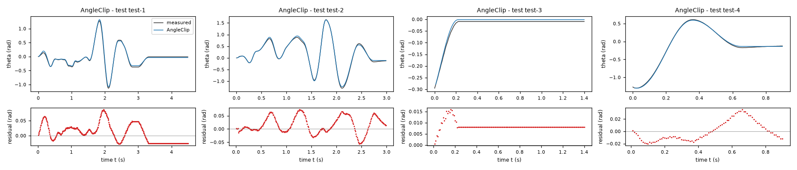
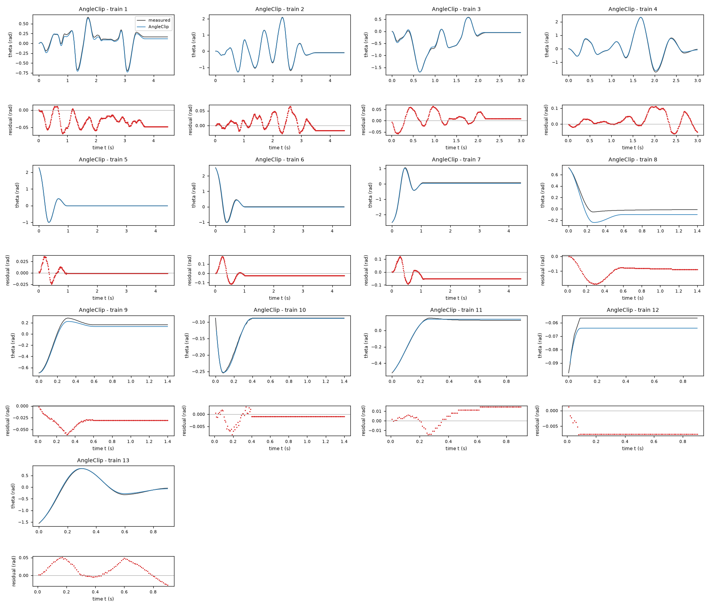
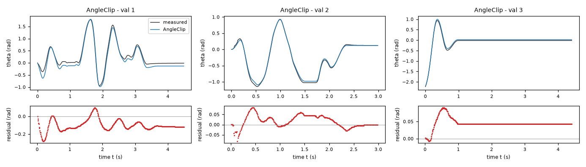
| Data | Trajectory | Scored samples | RMSE | NRMSE | R² | Failure |
|---|---|---|---|---|---|---|
| training data | 1 | 449 of 449 | 0.03794 | 0.1479 | 0.9781 | none |
| training data | 2 | 449 of 449 | 0.02149 | 0.03224 | 0.999 | none |
| training data | 3 | 299 of 299 | 0.02706 | 0.05729 | 0.9967 | none |
| training data | 4 | 299 of 299 | 0.04732 | 0.05774 | 0.9967 | none |
| training data | 5 | 441 of 441 | 0.007773 | 0.02031 | 0.9996 | none |
| training data | 6 | 441 of 441 | 0.0456 | 0.09991 | 0.99 | none |
| training data | 7 | 441 of 441 | 0.05215 | 0.1005 | 0.9899 | none |
| training data | 8 | 140 of 140 | 0.1041 | 0.6337 | 0.5985 | none |
| training data | 9 | 140 of 140 | 0.03384 | 0.1547 | 0.9761 | none |
| training data | 10 | 140 of 140 | 0.00212 | 0.04311 | 0.9981 | none |
| training data | 11 | 90 of 90 | 0.01045 | 0.06352 | 0.996 | none |
| training data | 12 | 90 of 90 | 0.007276 | 1.426 | -1.034 | none |
| training data | 13 | 90 of 90 | 0.02637 | 0.04853 | 0.9976 | none |
| validation data | 1 | 449 of 449 | 0.1191 | 0.2178 | 0.9526 | none |
| validation data | 2 | 299 of 299 | 0.03379 | 0.06043 | 0.9963 | none |
| validation data | 3 | 441 of 441 | 0.04684 | 0.1246 | 0.9845 | none |
| test data | test-1 | 449 of 449 | 0.03142 | 0.0832 | 0.9931 | none |
| test data | test-2 | 299 of 299 | 0.0347 | 0.05614 | 0.9968 | none |
| test data | test-3 | 140 of 140 | 0.008622 | 0.1629 | 0.9735 | none |
| test data | test-4 | 90 of 90 | 0.01581 | 0.02994 | 0.9991 | none |
RMSE of theta in rad; NRMSE = RMSE / σ and R² = 1 − SSE / Σ(y[k] − μ)², with μ and σ the mean and the population standard deviation of the measured output on the scored samples.
a = 29.19 rad/(s^2*V) (fitted), b = 1.786 1/s (fitted), g = 114.7 rad/s^2 (fitted), c = 28.55 rad/s^2 (fitted), k = 11.01 1/s (fitted), hs = -0.1994 (fitted), hc = -0.3067 (fitted), v = 0.169 rad/s (fitted)theta: 0.04931 rad · validation error: 0.07852 rad · test error: 0.02234 radEquations as written in the model file
dtheta = omega
domega = exp(-(omega/v)**2)*(Max(a*u-g*sin(theta)-c*(1+hs*sin(theta)+hc*cos(theta)),0)+Min(a*u-g*sin(theta)+c*(1+hs*sin(theta)+hc*cos(theta)),0))+(1-exp(-(omega/v)**2))*(a*u-g*sin(theta)-c*(1+hs*sin(theta)+hc*cos(theta))*tanh(omega/v))-b*omega-k*exp(-(omega/v)**2)*omega
Equations with the values substituted
Every parameter is replaced by its value with 4 significant digits.
Parameters and estimation
| Name | Value | Unit | Type | Description |
|---|---|---|---|---|
a | 29.1855 | rad/(s^2*V) | fitted | Voltage-to-acceleration gain; positive motor torque per effective inertia. Estimated jointly with all other parameters of this candidate by the output-error procedure below. |
b | 1.7856 | 1/s | fitted | Viscous acceleration coefficient, including mechanical drag and motor back-EMF effects that cannot be separated by these data. Estimated jointly with all other parameters of this candidate by the output-error procedure below. |
g | 114.726 | rad/s^2 | fitted | Sinusoidal restoring-acceleration amplitude, interpreted as gravitational torque divided by effective inertia. Estimated jointly with all other parameters of this candidate by the output-error procedure below. |
c | 28.5547 | rad/s^2 | fitted | Dry-friction acceleration scale. Estimated jointly with all other parameters of this candidate by the output-error procedure below. |
k | 11.0054 | 1/s | fitted | Low-speed stopping relaxation rate used by the algebraic friction regularization, not a separately measured material property. Estimated jointly with all other parameters of this candidate by the output-error procedure below. |
hs | -0.199369 | - | fitted | Dimensionless sine coefficient of angular friction modulation. Estimated jointly with all other parameters of this candidate by the output-error procedure below. |
hc | -0.306699 | - | fitted | Dimensionless cosine coefficient of angular friction modulation. Estimated jointly with all other parameters of this candidate by the output-error procedure below. |
v | 0.168984 | rad/s | fitted | Low-speed regularization width of the friction transition. Estimated jointly with all other parameters of this candidate by the output-error procedure below. |
- Criterion minimized
SciPy soft-L1 loss on open-loop angle residuals, defined as simulated
thetaminus measuredtheta, with loss scale0.04rad. This downweights large encoder/transient/stopping discrepancies without discarding their samples. The angle output-error criterion matches the intended autonomous simulation use; differentiation-based acceleration residuals were only used for initialization and structural diagnostics.- Data
data/train.csv, all 13 trajectories, and data/val.csv, all 3 trajectories. The validation file was first reserved for comparison of training-only structures, then included in the final estimation to reduce parameter uncertainty. The final loss uses every angle sample after the first of each trajectory, with equal weight per sample; the first logged
thetaandomegainitialize that trajectory. Inputsuare held at the logged value between samples. No test data were accessed. In cross-validation the three validation trajectories are internally numbered 14 through 16; their file IDs remain 1 through 3.- Method
All 8 fitted parameters were optimized together by bounded nonlinear least squares using scipy.optimize.least_squares (Trust Region Reflective algorithm), with
soft_l1loss,x_scale = "jac", , , , , and . Here solver tolerances and finite-difference scale are numerical settings, not physical parameters. Each residual evaluation integrates separate trajectories by classical RK4, one step of0.01s, with zero-order-heldu, exactly as the task specifies. Numba compiles the simulator; it does not change the model. Parameter ordering isa(rad/(s^2*V)),b(1/s),g(rad/s^2),c(rad/s^2),k(1/s),hs(dimensionless),hc(dimensionless),v(rad/s). Six initial vectors in that ordering were[29.129999999999999, 1.71, 115.33, 28.82, 14.279999999999999, -0.19, -0.28999999999999998, 0.435];[28.165475069545128, 1.7283622282593316, 118.6263665969024, 31.857238934335431, 178.08690792890459, -0.2262206096183062, -0.27321525981186207, 0.435];[28.70694283752491, 1.8030899665782099, 112.4595373115546, 28.66679129006253, 33.734018422183958, -0.27089090680201028, -0.32624763227022774, 0.435];[31.239150982642581, 1.5179677904966991, 114.55692202551526, 27.820049066330476, 117.33797776253888, -0.11712060784478076, -0.31840200780792499, 0.435];[26.377799117366774, 1.9924047606172615, 122.69844819442299, 28.556079973922724, 155.45940380404545, -0.29665163269275541, -0.27435177321509097, 0.435];[29.32429707074197, 1.5423220711778369, 109.62629718697762, 25.729848870848805, 114.64073582176601, -0.25985033058761781, -0.387598203485996, 0.435]; each component has the corresponding unit just listed. Bounds in that same order are lower[1, 0, 20, 0, 3, -0.65000000000000002, -0.65000000000000002, 0.12]and upper[60, 10, 200, 60, 220, 0.65000000000000002, 0.65000000000000002, 5], with the corresponding component units. The first start came from the preceding torque-balance/output-error fit; the other five are deterministic local perturbations, using numpy.random.default_rng with seed271828, to reduce sensitivity to local minima. The same script evaluates both ordinary squared loss and soft-L1 loss (scale0.04rad), with six starts per loss; the best fitting objective is retained within each loss. Leave-one-trajectory-out refits on the 16 available trajectories then select the loss by aggregate held-out angle RMSE. Those refits are warm-started from the full-data estimate but exclude the held-out trajectory from their objective; their limit is . The delivered values are the selected full-data fit, not an average of cross-validation parameters. Every other setting is identical between those refits and the full-data fit. Positive gain, restoring amplitude and friction scale, nonnegative viscous drag, and bounded modulation coefficients were imposed for stability and the physical requirements. The velocity-width lower bound0.12rad/s avoids an excessively stiff explicit-RK4 regularization; stopping rates are bounded below the approximately2781/s scalar RK4 stability limit for this sampling period. Bounds onhsandhcguarantee a positive angular envelope even at their extreme combinations. This direct low-dimensional output-error method was preferred to a black-box predictor because states are never corrected after initialization.- Script
fit_final.py
The agent's explanation
Continuous static/kinetic friction blending model with a force dead zone, a Gaussian velocity blending function and a nonlinear pendulum torque balance. Background: B. Armstrong-Helouvry, P. Dupont and C. Canudas de Wit, 'A survey of models, analysis tools and compensation methods for the control of machines with friction', Automatica (1994). This bibliographic reference is recalled from memory; the attempted web retrieval did not return usable source text. The custom algebraic closures here are not claimed to be the exact models in that survey.
is kinematics. Define the external acceleration as , the angular dry-friction scale as , and the near-rest weight as . The dead-zone term transmits only torque beyond the friction threshold. Its weight tends to one at rest. The kinetic term takes over with increasing speed. is viscous drag; damps the near-rest motion. Static and kinetic friction scales are assumed equal. Angular modulation is empirical.
The dead zone came from the need to reproduce nonzero sticking angles. A Gaussian velocity blend was a deliberate smooth-closure design choice, not a symbolic-search discovery. Angular modulation was added after moving-sample library diagnostics, as for the projection model. An unconstrained version fitted a static limit below the sliding scale, which was not physically convincing. An additional nonnegative static-friction excess was then tested and fitted essentially to zero on the training data; it was removed. The delivered model imposes equal static and kinetic scales and refits all remaining parameters. Robust loss was selected by leave-one-trajectory-out output-error comparison.
This closure is a smooth algebraic approximation, not a hybrid model with exact slip events or a presliding displacement state. Its finite velocity transition and additional low-speed damping can affect breakaway and small perturbations of static equilibria. The data do not determine a separate static excess, so equality of static and kinetic scales is an explicit assumption. Directional friction and hidden motor-current dynamics are not included. The angle envelope is empirical, and extrapolation in voltage is unverified. Full-data angle RMSE is 0.05810928 rad and aggregate leave-one-trajectory-out angle RMSE is 0.06320398 rad across all 16 known trajectories; these are not test scores.
Physical requirements
| Requirement | Statement | Outcome | Detail |
|---|---|---|---|
| R1 | proof | the quantity is identically zero on the domain | |
| R2 | proof | verified enclosures on 3 sub-box(es) covering the domain do not exceed the tolerance 0.0 | |
| R3 | inconclusive | no violation found at the 10000 sampled points (largest value of Q -0.9368881909528, tolerance 0.0); this is not a proof |
Plots of simulated and measured theta, and errors per trajectory
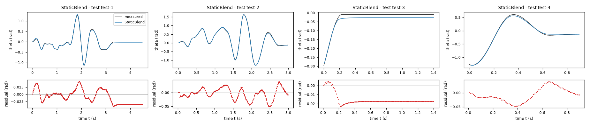
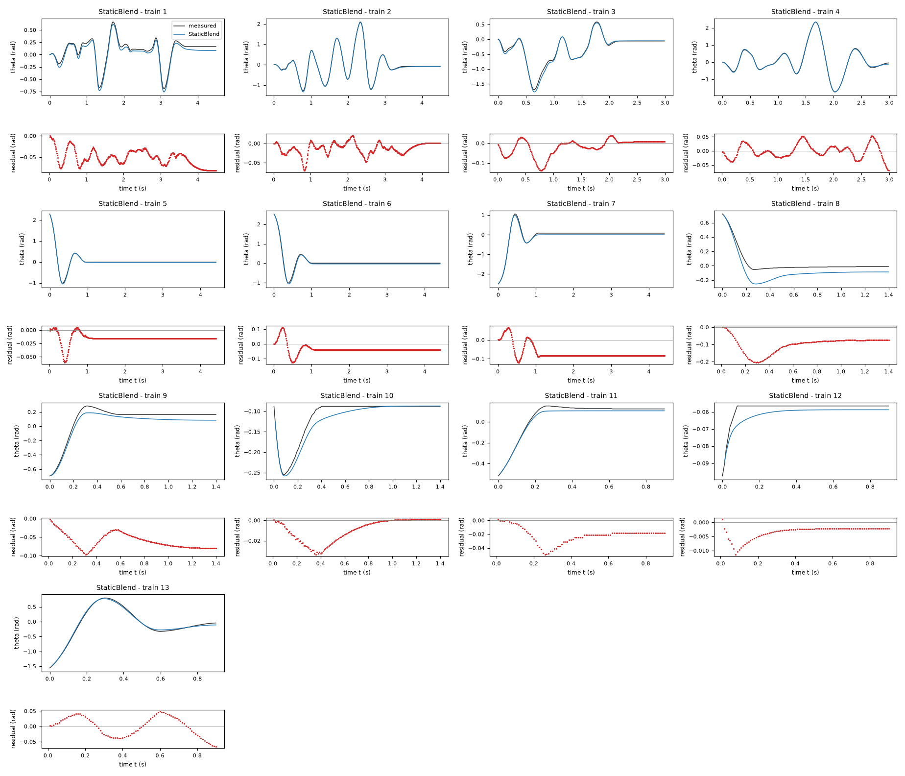
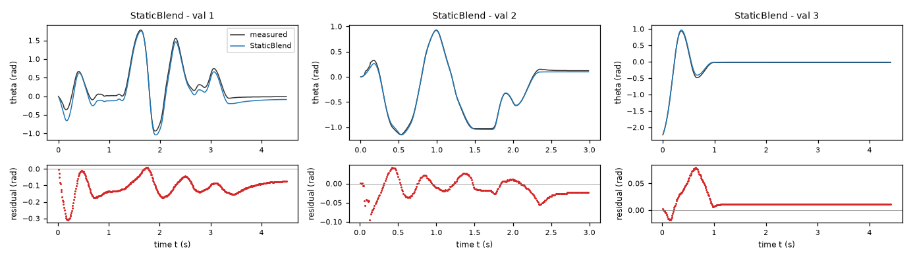
| Data | Trajectory | Scored samples | RMSE | NRMSE | R² | Failure |
|---|---|---|---|---|---|---|
| training data | 1 | 449 of 449 | 0.05513 | 0.2149 | 0.9538 | none |
| training data | 2 | 449 of 449 | 0.0197 | 0.02957 | 0.9991 | none |
| training data | 3 | 299 of 299 | 0.04384 | 0.09282 | 0.9914 | none |
| training data | 4 | 299 of 299 | 0.02459 | 0.03001 | 0.9991 | none |
| training data | 5 | 441 of 441 | 0.01793 | 0.04685 | 0.9978 | none |
| training data | 6 | 441 of 441 | 0.04846 | 0.1062 | 0.9887 | none |
| training data | 7 | 441 of 441 | 0.07711 | 0.1486 | 0.9779 | none |
| training data | 8 | 140 of 140 | 0.11 | 0.6695 | 0.5517 | none |
| training data | 9 | 140 of 140 | 0.06384 | 0.2919 | 0.9148 | none |
| training data | 10 | 140 of 140 | 0.01434 | 0.2916 | 0.9149 | none |
| training data | 11 | 90 of 90 | 0.02438 | 0.1481 | 0.9781 | none |
| training data | 12 | 90 of 90 | 0.004107 | 0.8049 | 0.3521 | none |
| training data | 13 | 90 of 90 | 0.03181 | 0.05855 | 0.9966 | none |
| validation data | 1 | 449 of 449 | 0.1238 | 0.2264 | 0.9487 | none |
| validation data | 2 | 299 of 299 | 0.02654 | 0.04747 | 0.9977 | none |
| validation data | 3 | 441 of 441 | 0.02326 | 0.06187 | 0.9962 | none |
| test data | test-1 | 449 of 449 | 0.0242 | 0.06409 | 0.9959 | none |
| test data | test-2 | 299 of 299 | 0.02062 | 0.03336 | 0.9989 | none |
| test data | test-3 | 140 of 140 | 0.01676 | 0.3167 | 0.8997 | none |
| test data | test-4 | 90 of 90 | 0.02552 | 0.04834 | 0.9977 | none |
RMSE of theta in rad; NRMSE = RMSE / σ and R² = 1 − SSE / Σ(y[k] − μ)², with μ and σ the mean and the population standard deviation of the measured output on the scored samples.
a = 28.79 rad/(s^2*V) (fitted), b = 1.773 1/s (fitted), g = 114.1 rad/s^2 (fitted), c = 28.07 rad/s^2 (fitted), v = 0.12 rad/s (fitted), hs = -0.2369 (fitted), hc = -0.3156 (fitted)theta: 0.04738 rad · validation error: 0.07999 rad · test error: 0.0208 radEquations as written in the model file
dtheta = omega
domega = a*u-g*sin(theta)-b*omega-c*(1+hs*sin(theta)+hc*cos(theta))*tanh(omega/v)
Equations with the values substituted
Every parameter is replaced by its value with 4 significant digits.
Parameters and estimation
| Name | Value | Unit | Type | Description |
|---|---|---|---|---|
a | 28.7942 | rad/(s^2*V) | fitted | Voltage-to-acceleration gain; positive motor torque per effective inertia. Estimated jointly with all other parameters of this candidate by the output-error procedure below. |
b | 1.77279 | 1/s | fitted | Viscous acceleration coefficient, including mechanical drag and motor back-EMF effects that cannot be separated by these data. Estimated jointly with all other parameters of this candidate by the output-error procedure below. |
g | 114.105 | rad/s^2 | fitted | Sinusoidal restoring-acceleration amplitude, interpreted as gravitational torque divided by effective inertia. Estimated jointly with all other parameters of this candidate by the output-error procedure below. |
c | 28.0681 | rad/s^2 | fitted | Dry-friction acceleration scale. Estimated jointly with all other parameters of this candidate by the output-error procedure below. |
v | 0.12 | rad/s | fitted | Low-speed regularization width of the friction transition. Estimated jointly with all other parameters of this candidate by the output-error procedure below. |
hs | -0.236941 | - | fitted | Dimensionless sine coefficient of angular friction modulation. Estimated jointly with all other parameters of this candidate by the output-error procedure below. |
hc | -0.315627 | - | fitted | Dimensionless cosine coefficient of angular friction modulation. Estimated jointly with all other parameters of this candidate by the output-error procedure below. |
- Criterion minimized
SciPy soft-L1 loss on open-loop angle residuals, defined as simulated
thetaminus measuredtheta, with loss scale0.04rad. This downweights large encoder/transient/stopping discrepancies without discarding their samples. The angle output-error criterion matches the intended autonomous simulation use; differentiation-based acceleration residuals were only used for initialization and structural diagnostics.- Data
data/train.csv, all 13 trajectories, and data/val.csv, all 3 trajectories. The validation file was first reserved for comparison of training-only structures, then included in the final estimation to reduce parameter uncertainty. The final loss uses every angle sample after the first of each trajectory, with equal weight per sample; the first logged
thetaandomegainitialize that trajectory. Inputsuare held at the logged value between samples. No test data were accessed. In cross-validation the three validation trajectories are internally numbered 14 through 16; their file IDs remain 1 through 3.- Method
All 7 fitted parameters were optimized together by bounded nonlinear least squares using scipy.optimize.least_squares (Trust Region Reflective algorithm), with
soft_l1loss,x_scale = "jac", , , , , and . Here solver tolerances and finite-difference scale are numerical settings, not physical parameters. Each residual evaluation integrates separate trajectories by classical RK4, one step of0.01s, with zero-order-heldu, exactly as the task specifies. Numba compiles the simulator; it does not change the model. Parameter ordering isa(rad/(s^2*V)),b(1/s),g(rad/s^2),c(rad/s^2),v(rad/s),hs(dimensionless),hc(dimensionless). Six initial vectors in that ordering were[28.78580889036532, 1.7722722306053798, 114.17653297608969, 27.723912183665373, 0.12000000000000001, -0.22846389392140354, -0.30226335369636131];[33.295231122134901, 1.9386848506237793, 123.36515400102255, 22.846891043789892, 0.12000000999999999, -0.20651483987224167, -0.18481099991173888];[31.437572460602524, 1.7691401722100053, 106.29025156096748, 26.348911820389144, 0.12000000999999999, -0.25787704074548151, -0.2957689763289566];[28.637886628571671, 1.5834360448716591, 118.47290533087657, 28.776410903063564, 0.12000000999999999, -0.17411822136613872, -0.37370897940302217];[30.364387449547547, 1.6683301715868037, 113.01282785020403, 27.659888102307473, 0.12000000999999999, -0.2104651306228352, -0.27627713151883065];[28.976278233445651, 1.7655927566724441, 120.43744718280901, 26.966801535908672, 0.12000000999999999, -0.27236185380445943, -0.28772938089342559]; each component has the corresponding unit just listed. Bounds in that same order are lower[1, 0, 20, 0, 0.12, -0.65000000000000002, -0.65000000000000002]and upper[60, 10, 200, 60, 5, 0.65000000000000002, 0.65000000000000002], with the corresponding component units. The first start came from the preceding torque-balance/output-error fit; the other five are deterministic local perturbations, using numpy.random.default_rng with seed271828, to reduce sensitivity to local minima. The same script evaluates both ordinary squared loss and soft-L1 loss (scale0.04rad), with six starts per loss; the best fitting objective is retained within each loss. Leave-one-trajectory-out refits on the 16 available trajectories then select the loss by aggregate held-out angle RMSE. Those refits are warm-started from the full-data estimate but exclude the held-out trajectory from their objective; their limit is . The delivered values are the selected full-data fit, not an average of cross-validation parameters. Every other setting is identical between those refits and the full-data fit. Positive gain, restoring amplitude and friction scale, nonnegative viscous drag, and bounded modulation coefficients were imposed for stability and the physical requirements. The velocity-width lower bound0.12rad/s avoids an excessively stiff explicit-RK4 regularization; stopping rates are bounded below the approximately2781/s scalar RK4 stability limit for this sampling period. Bounds onhsandhcguarantee a positive angular envelope even at their extreme combinations. This direct low-dimensional output-error method was preferred to a black-box predictor because states are never corrected after initialization.- Script
fit_final.py
The agent's explanation
Regularized Coulomb-plus-viscous pendulum model with an empirical trigonometric friction envelope. Background: B. Armstrong-Helouvry, P. Dupont and C. Canudas de Wit, 'A survey of models, analysis tools and compensation methods for the control of machines with friction', Automatica (1994). This bibliographic reference is recalled from memory; the attempted web retrieval did not return usable source text. The custom algebraic closures here are not claimed to be the exact models in that survey.
is kinematics. , and represent motor drive, restoring torque per inertia and viscous drag. is smooth, odd-in-speed dry-friction drag, with an angle-dependent positive magnitude. hs and hc describe mathematical modulation rather than a measured pressure law. v makes friction approximately linear at low speed and Coulomb-like outside that region.
This is the smooth Coulomb benchmark from the preregistered physical model plan, extended with angular friction modulation after a moving-sample linear-library residual fit supported sine and cosine modulation of sliding friction. The sine restoring torque was retained because the linear restoring law gave substantially larger derivative error. The structure was specified manually; only its constants were optimized. Robust estimation was chosen over ordinary output-error least squares by leave-one-trajectory-out simulation comparison.
Unlike the recommended projection model, supplies zero friction at exactly zero speed: the only exact free equilibria are zeros of the sine restoring torque. Apparent sticking is low-speed creep, so it cannot reproduce permanent nonzero rest angles. v reaches its chosen lower bound, indicating insufficient evidence to estimate a sharp physical transition width. The regularization is also sampling-period sensitive. The periodic envelope is empirical and may absorb sensor artifacts. Motor torque and inertia cannot be separated, and voltage extrapolation beyond the observed range is an assumption. Full-data angle RMSE is 0.05740852 rad and aggregate leave-one-trajectory-out angle RMSE is 0.06128174 rad across all 16 known trajectories; these are not test scores.
Physical requirements
| Requirement | Statement | Outcome | Detail |
|---|---|---|---|
| R1 | proof | the quantity is identically zero on the domain | |
| R2 | proof | verified enclosures on 3 sub-box(es) covering the domain do not exceed the tolerance 0.0 | |
| R3 | proof | the quantity reduces to the constant -28.79422899933597, which does not exceed the tolerance 0.0 |
Plots of simulated and measured theta, and errors per trajectory
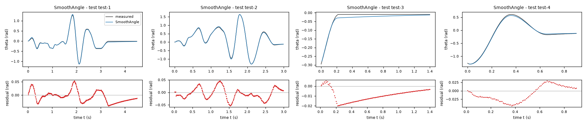
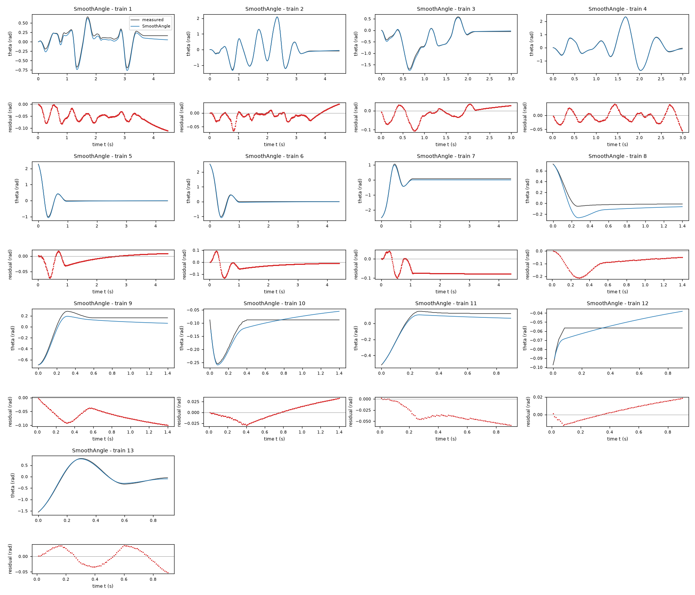
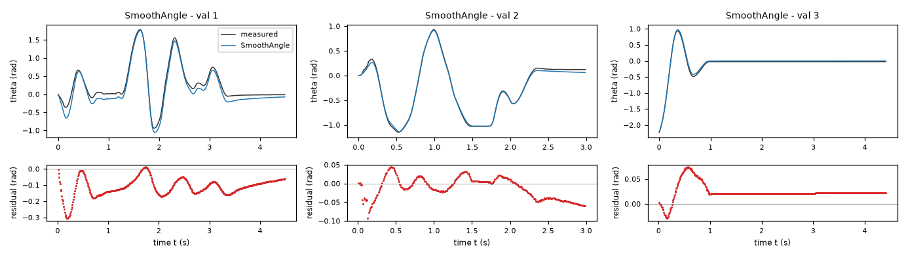
| Data | Trajectory | Scored samples | RMSE | NRMSE | R² | Failure |
|---|---|---|---|---|---|---|
| training data | 1 | 449 of 449 | 0.06103 | 0.2379 | 0.9434 | none |
| training data | 2 | 449 of 449 | 0.01804 | 0.02706 | 0.9993 | none |
| training data | 3 | 299 of 299 | 0.03577 | 0.07575 | 0.9943 | none |
| training data | 4 | 299 of 299 | 0.01986 | 0.02423 | 0.9994 | none |
| training data | 5 | 441 of 441 | 0.01807 | 0.04721 | 0.9978 | none |
| training data | 6 | 441 of 441 | 0.03994 | 0.08751 | 0.9923 | none |
| training data | 7 | 441 of 441 | 0.07062 | 0.1361 | 0.9815 | none |
| training data | 8 | 140 of 140 | 0.1059 | 0.6447 | 0.5844 | none |
| training data | 9 | 140 of 140 | 0.07001 | 0.3201 | 0.8975 | none |
| training data | 10 | 140 of 140 | 0.01782 | 0.3625 | 0.8686 | none |
| training data | 11 | 90 of 90 | 0.04007 | 0.2435 | 0.9407 | none |
| training data | 12 | 90 of 90 | 0.00983 | 1.927 | -2.712 | none |
| training data | 13 | 90 of 90 | 0.02517 | 0.04633 | 0.9979 | none |
| validation data | 1 | 449 of 449 | 0.1245 | 0.2277 | 0.9481 | none |
| validation data | 2 | 299 of 299 | 0.03067 | 0.05485 | 0.997 | none |
| validation data | 3 | 441 of 441 | 0.02878 | 0.07656 | 0.9941 | none |
| test data | test-1 | 449 of 449 | 0.02136 | 0.05657 | 0.9968 | none |
| test data | test-2 | 299 of 299 | 0.02243 | 0.03629 | 0.9987 | none |
| test data | test-3 | 140 of 140 | 0.01089 | 0.2058 | 0.9576 | none |
| test data | test-4 | 90 of 90 | 0.02385 | 0.04516 | 0.998 | none |
RMSE of theta in rad; NRMSE = RMSE / σ and R² = 1 − SSE / Σ(y[k] − μ)², with μ and σ the mean and the population standard deviation of the measured output on the scored samples.
a = 28.96 rad/(s^2*V) (fitted), b = 3.139 1/s (fitted), g = 113.3 rad/s^2 (fitted), c = 19.84 rad/s^2 (fitted), v = 0.12 rad/s (fitted), vs = 9.354 rad/s (fitted)theta: 0.06698 rad · validation error: 0.08097 rad · test error: 0.04214 radEquations as written in the model file
dtheta = omega
domega = a*u-g*sin(theta)-b*omega-c*exp(-(omega/vs)**2)*tanh(omega/v)
Equations with the values substituted
Every parameter is replaced by its value with 4 significant digits.
Parameters and estimation
| Name | Value | Unit | Type | Description |
|---|---|---|---|---|
a | 28.963 | rad/(s^2*V) | fitted | Voltage-to-acceleration gain; positive motor torque per effective inertia. Estimated jointly with all other parameters of this candidate by the output-error procedure below. |
b | 3.13938 | 1/s | fitted | Viscous acceleration coefficient, including mechanical drag and motor back-EMF effects that cannot be separated by these data. Estimated jointly with all other parameters of this candidate by the output-error procedure below. |
g | 113.306 | rad/s^2 | fitted | Sinusoidal restoring-acceleration amplitude, interpreted as gravitational torque divided by effective inertia. Estimated jointly with all other parameters of this candidate by the output-error procedure below. |
c | 19.8369 | rad/s^2 | fitted | Dry-friction acceleration scale. Estimated jointly with all other parameters of this candidate by the output-error procedure below. |
v | 0.12 | rad/s | fitted | Low-speed regularization width of the friction transition. Estimated jointly with all other parameters of this candidate by the output-error procedure below. |
vs | 9.3542 | rad/s | fitted | Speed scale of the Gaussian speed-weakening friction envelope. Estimated jointly with all other parameters of this candidate by the output-error procedure below. |
- Criterion minimized
SciPy soft-L1 loss on open-loop angle residuals, defined as simulated
thetaminus measuredtheta, with loss scale0.04rad. This downweights large encoder/transient/stopping discrepancies without discarding their samples. The angle output-error criterion matches the intended autonomous simulation use; differentiation-based acceleration residuals were only used for initialization and structural diagnostics.- Data
data/train.csv, all 13 trajectories, and data/val.csv, all 3 trajectories. The validation file was first reserved for comparison of training-only structures, then included in the final estimation to reduce parameter uncertainty. The final loss uses every angle sample after the first of each trajectory, with equal weight per sample; the first logged
thetaandomegainitialize that trajectory. Inputsuare held at the logged value between samples. No test data were accessed. In cross-validation the three validation trajectories are internally numbered 14 through 16; their file IDs remain 1 through 3.- Method
All 6 fitted parameters were optimized together by bounded nonlinear least squares using scipy.optimize.least_squares (Trust Region Reflective algorithm), with
soft_l1loss,x_scale = "jac", , , , , and . Here solver tolerances and finite-difference scale are numerical settings, not physical parameters. Each residual evaluation integrates separate trajectories by classical RK4, one step of0.01s, with zero-order-heldu, exactly as the task specifies. Numba compiles the simulator; it does not change the model. Parameter ordering isa(rad/(s^2*V)),b(1/s),g(rad/s^2),c(rad/s^2),v(rad/s),vs(rad/s). Six initial vectors in that ordering were[28.460000000000001, 3.056, 111.67, 19.949999999999999, 0.12, 9.4800000000000004];[30.711853493076514, 2.9393315096039849, 108.88622082784906, 20.823337840696155, 0.12000000999999999, 9.4800000000000004];[28.692015414123919, 3.3299979813088161, 110.45861070568938, 19.693434255790855, 0.12000000999999999, 9.4800000000000004];[29.61248805127887, 2.9465279153401731, 113.29093253097471, 20.463778098035487, 0.12000000999999999, 9.4800000000000004];[29.362322427114744, 3.3395742310273371, 114.07641874325033, 20.015931536054001, 0.12000000999999999, 9.4800000000000004];[28.057392836818018, 3.0293181007555927, 123.05880096451847, 20.520439843145013, 0.12000000999999999, 9.4800000000000004]; each component has the corresponding unit just listed. Bounds in that same order are lower[1, 0, 20, 0, 0.12, 0.20000000000000001]and upper[60, 10, 200, 60, 5, 15], with the corresponding component units. The first start came from the preceding torque-balance/output-error fit; the other five are deterministic local perturbations, using numpy.random.default_rng with seed271828, to reduce sensitivity to local minima. The same script evaluates both ordinary squared loss and soft-L1 loss (scale0.04rad), with six starts per loss; the best fitting objective is retained within each loss. Leave-one-trajectory-out refits on the 16 available trajectories then select the loss by aggregate held-out angle RMSE. Those refits are warm-started from the full-data estimate but exclude the held-out trajectory from their objective; their limit is . The delivered values are the selected full-data fit, not an average of cross-validation parameters. Every other setting is identical between those refits and the full-data fit. Positive gain, restoring amplitude and friction scale, nonnegative viscous drag, and bounded modulation coefficients were imposed for stability and the physical requirements. The velocity-width lower bound0.12rad/s avoids an excessively stiff explicit-RK4 regularization; stopping rates are bounded below the approximately2781/s scalar RK4 stability limit for this sampling period. Bounds onhsandhcguarantee a positive angular envelope even at their extreme combinations. This direct low-dimensional output-error method was preferred to a black-box predictor because states are never corrected after initialization.- Script
fit_final.py
The agent's explanation
Gaussian Stribeck-type speed-weakening friction with viscous drag and a pendulum torque balance. Background: B. Armstrong-Helouvry, P. Dupont and C. Canudas de Wit, 'A survey of models, analysis tools and compensation methods for the control of machines with friction', Automatica (1994). This bibliographic reference is recalled from memory; the attempted web retrieval did not return usable source text. The custom algebraic closures here are not claimed to be the exact models in that survey.
is kinematics. is motor acceleration, is restoring acceleration and is viscous drag. opposes angular velocity, approaching smooth Coulomb drag at speeds above v but below vs, and decreasing at higher speeds. c controls the friction scale, v the near-zero regularization and vs the speed-weakening scale. There is no angle-dependent friction in this candidate.
The original physically motivated smooth Coulomb family was extended by a standard Gaussian Stribeck envelope after speed-dependent derivative residuals were examined. In its initial fit a separate high-speed dry-friction asymptote converged essentially to zero, while the viscous term increased. The asymptote was therefore removed rather than retained as a tiny uninterpretable coefficient; all six remaining parameters were re-estimated jointly. This is an independently defensible alternative torque-balance family, not a perturbation of the projection coefficients. Its robust-loss fit was selected by cross-validation.
The high-speed dry-friction asymptote is assumed zero; these recordings do not determine it separately from viscous drag. This is an effective speed-weakening approximation, not evidence that felt friction vanishes at arbitrarily high speed. It has no exact nonzero stick band: at rest the friction term is zero, so nonzero resting angles slowly creep. The fitted transition width reaches its imposed lower bound. It omits the angular and directional effects that improved the recommended model. Its overall cross-validated angle error is larger, but it is useful as a structurally simpler speed-dependent alternative. Full-data angle RMSE is 0.07078063 rad and aggregate leave-one-trajectory-out angle RMSE is 0.07691553 rad across all 16 known trajectories; these are not test scores.
Physical requirements
| Requirement | Statement | Outcome | Detail |
|---|---|---|---|
| R1 | proof | the quantity is identically zero on the domain | |
| R2 | proof | verified enclosures on 3 sub-box(es) covering the domain do not exceed the tolerance 0.0 | |
| R3 | proof | the quantity reduces to the constant -28.9630245363397, which does not exceed the tolerance 0.0 |
Plots of simulated and measured theta, and errors per trajectory
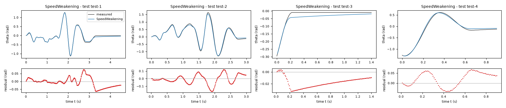
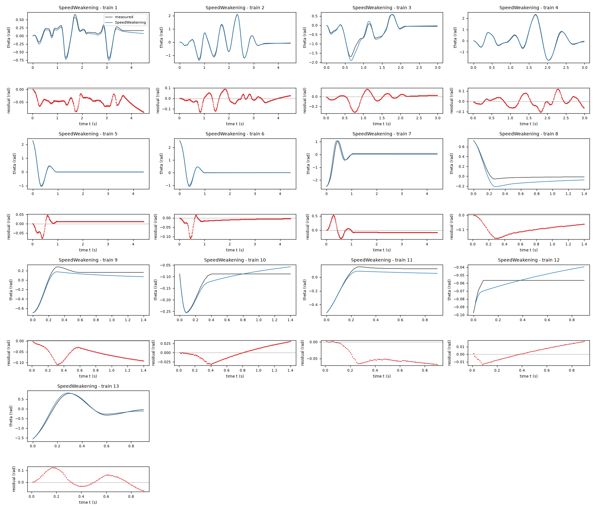
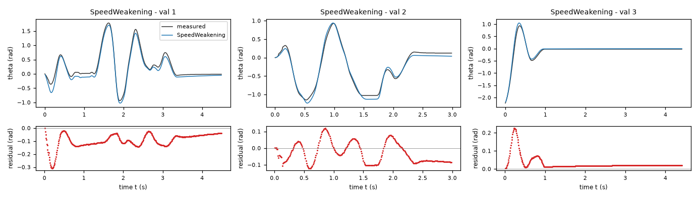
| Data | Trajectory | Scored samples | RMSE | NRMSE | R² | Failure |
|---|---|---|---|---|---|---|
| training data | 1 | 449 of 449 | 0.05149 | 0.2007 | 0.9597 | none |
| training data | 2 | 449 of 449 | 0.04088 | 0.06134 | 0.9962 | none |
| training data | 3 | 299 of 299 | 0.09223 | 0.1953 | 0.9619 | none |
| training data | 4 | 299 of 299 | 0.04587 | 0.05597 | 0.9969 | none |
| training data | 5 | 441 of 441 | 0.02059 | 0.05381 | 0.9971 | none |
| training data | 6 | 441 of 441 | 0.02172 | 0.04758 | 0.9977 | none |
| training data | 7 | 441 of 441 | 0.1318 | 0.254 | 0.9355 | none |
| training data | 8 | 140 of 140 | 0.1002 | 0.61 | 0.6279 | none |
| training data | 9 | 140 of 140 | 0.06509 | 0.2976 | 0.9114 | none |
| training data | 10 | 140 of 140 | 0.01741 | 0.3541 | 0.8746 | none |
| training data | 11 | 90 of 90 | 0.05173 | 0.3143 | 0.9012 | none |
| training data | 12 | 90 of 90 | 0.009284 | 1.82 | -2.311 | none |
| training data | 13 | 90 of 90 | 0.05625 | 0.1035 | 0.9893 | none |
| validation data | 1 | 449 of 449 | 0.109 | 0.1994 | 0.9602 | none |
| validation data | 2 | 299 of 299 | 0.06801 | 0.1216 | 0.9852 | none |
| validation data | 3 | 441 of 441 | 0.04937 | 0.1313 | 0.9827 | none |
| test data | test-1 | 449 of 449 | 0.03006 | 0.07961 | 0.9937 | none |
| test data | test-2 | 299 of 299 | 0.06148 | 0.09948 | 0.9901 | none |
| test data | test-3 | 140 of 140 | 0.01973 | 0.3728 | 0.8611 | none |
| test data | test-4 | 90 of 90 | 0.04032 | 0.07637 | 0.9942 | none |
RMSE of theta in rad; NRMSE = RMSE / σ and R² = 1 − SSE / Σ(y[k] − μ)², with μ and σ the mean and the population standard deviation of the measured output on the scored samples.
2 Course of the run
The system prompt, TASK.md and FORMAT.md that the agent received are shown on the page of the experiment.
0:00Harness: opening message to the agent
10:04Read TASK.md0.01
5,474 input and 19 output tokens; 0.011 USD for this turn.
TASK.md
output as sent to the agent (6,212 characters, 44 lines)
[TASK.md: 6185 characters] # Task: Rotational motion under dry friction, driven by a DC motor (lab rig) ## 1 System and intended use Data from a real lab rig: a rotational motion system with adjustable dry friction, driven by a voltage-controlled DC motor. A leaf spring presses a felt pad against a rotating disc. The dry-friction level is approximately constant across all recordings; bearing friction (viscous and dry) is present too. Zero angle is the hanging equilibrium. Each row is one sample of the angle theta (rad), the angular velocity omega (rad/s), the motor voltage u (V, an exogenous input) and the angular acceleration domega (rad/s^2), sampled with period T_s = 0.01 s (100 Hz). The state-space model consists of an unknown (sought) closed-form nonlinear expression: domega, the time derivative of omega, as functions of theta, omega and u; and the kinematic identity dtheta = omega as a formal requirement (R1). The training and validation files each contain several separate trajectories of two kinds, marked by the column `trajectory`; a file is not one contiguous trajectory. Driven trajectories start at rest at theta = 0 with a random binary voltage signal applied throughout. Free-response trajectories start from an initial angle with u = 0 throughout; most of their samples are at rest inside the stick band. One model must cover both regimes. The signals come from a digital encoder and numerical differentiation. Simulation of the angle. The model is integrated from the first (theta, omega) sample of a held-out trajectory, with the recorded voltage u applied and no further corrections, and the simulated angle is compared with the measured one. The held-out trajectories are of both kinds, driven and free response. The model should give stable, accurate long-horizon simulation, including realistic sticking at rest. ## 2 Data `data/train.csv` holds 3522 samples of training data: 13 trajectories of 450, 450, 300, 300, 442, 442, 442, 141, 141, 141, 91, 91, 91 consecutive samples; the column `trajectory` holds the trajectory number. `data/val.csv` holds 1192 samples of validation data: 3 trajectories of 450, 300, 442 consecutive samples; the column `trajectory` holds the trajectory number. Whether and how you use the validation data is your decision. Row k+1 of a trajectory is the sample that follows row k; different trajectories are separate experiments. The sampling period is T_s = 0.01 s. | Column | Role | Unit | Training range | Description | |---|---|---|---|---| | `theta` | state, scored output | rad | -3.1416 to 3.1416 | angle, state and measured output | | `omega` | state | rad/s | not declared | angular velocity | | `u` | input | V | -10 to 10 | motor voltage, exogenous input | | `domega` | sampled time derivative of `omega` | rad/s^2 | not declared | angular acceleration, the time derivative of omega; a possible fitting target | ## 3 What you deliver A candidate is a continuous-time model of 2 closed-form expressions, `dtheta` and `domega`: the time derivatives of the states `theta` and `omega` as functions of `theta`, `omega` and `u`. The column `domega` is a possible fitting target for the derivative of `omega`; it is not an argument of the expressions. `FORMAT.md` states how an expression is written and what it may contain. Write one file per candidate, `models/<label>.json`; `FORMAT.md` describes the file and gives an example. Write also `models/pool.json`, which lists the labels of your candidates in the order in which they are to be evaluated. You can recommend one candidate that you consider the best-performing. `models/pool.json` then names that candidate and gives your reason. Run `python check_submission.py` to check your files: it prints every error with its location, so that you can correct it. At most 10 candidates are evaluated, in the order of `models/pool.json`. Consider various identification approaches, for example physically motivated structures, symbolic-regression search or sparse regression; before fitting, list the approaches and the model families you will try. Build the pool from structurally different model families, not from variations of one form. Examine the residuals of your best candidates and try structures that can represent what they show. Include only candidates you would defend as a model of the system. ## 4 Evaluation The harness, the software that runs this task, evaluates every candidate on test data that you cannot access. For each test trajectory it starts from the first logged state and integrates the expressions with the classical fourth-order Runge–Kutta method, one step per sampling period, with the logged inputs held constant between samples; a simulated state is never replaced by a later measurement. The score is the root mean squared error (RMSE) between simulated and logged `theta`, in rad, over all test samples after the first of each trajectory. An evaluation fails when a value is not finite, when `theta` leaves [-1000, 1000] rad or `omega` leaves [-1000, 1000] rad/s, or when it takes longer than 60 s. ## 5 Physical requirements A formal requirement is a condition on one expression over a domain of its arguments. The tolerance is the admissible violation margin. The harness checks each requirement symbolically or at sampled points; a check at sampled points that finds no violation is not a proof. A demonstrated violation excludes the candidate from the ranking, unless stated otherwise below. - **R1**: `dtheta` = `omega`; domain: theta ∈ [-3.1416, 3.1416] rad, omega ∈ [-23, 23] rad/s, u ∈ [-10, 10] V; tolerance 0 rad/s. - **R2**: `domega*theta <= 0`; domain: theta ∈ [-π, π] rad, omega = 0 rad/s, u = 0 V; tolerance 0 rad^2/s^2. - **R3**: `domega` is increasing in `u`; domain: theta ∈ [-3.1416, 3.1416] rad, omega ∈ [-23, 23] rad/s, u ∈ [-10, 10] V; tolerance 0 rad/(s^2 V). ## 6 Limits and completion One round: 60 turns, 3600 s of execution time, 10 USD; a turn is one response of yours. When the files pass the check, send the exact message DONE. If the harness's check of the files then fails, you receive its report and may correct the files once. If a limit ends the round earlier, the complete candidate files are evaluated.
20:05Read FORMAT.md0.03
6,979 input and 19 output tokens; 0.014 USD for this turn.
FORMAT.md
output as sent to the agent (8,159 characters, 128 lines)
[FORMAT.md: 8130 characters]
# Model file format
This file is the same for every task. `TASK.md` names the expression keys, the variables and the permitted functions of your task.
## Candidate file `models/<label>.json`
Write one JSON file per candidate. The label is the file name: a letter, then up to 31 letters, digits, `_` or `-`. The file has these fields and no others:
- `expressions`: one expression text per expression key named in `TASK.md`.
- `parameters`: one row per parameter. A parameter is a constant of the expressions that you name yourself, for example `a1`. Its row has
- `name`: the name used in the expressions: a letter, then letters, digits or `_`; it differs from every column, expression key, constant and function name;
- `value`: the numerical value;
- `unit`: the unit; `-` for a dimensionless quantity;
- `type`: `fitted` (estimated from data), `fixed` (chosen or known, not estimated) or `tied` (computed from other parameters by `equation`);
- `description`: what the parameter represents; for a fixed value, where the value comes from and why it was chosen; for a value taken over from another candidate or an earlier fit, from which one;
- `equation`: for a tied parameter only: its defining equation over other parameters, given constants and numbers.
- `estimation`: how the values of the fitted parameters of this candidate were obtained and why in this way; for every fitted parameter it must be clear how its value was found. Write the record for this candidate model, not for the run as a whole: its own criterion, data, method and starting values, with the reasons that apply to this candidate. The record has
- `criterion`: what was minimized, on which variable, and why this criterion;
- `data`: the files, trajectories or rows used, and the reason when some were left out;
- `method`: how the values were estimated: the estimation method by its established name and the software function, and why this method and not another; the starting values as numbers, or the statement that the method needs none, and why these starting values; whether all fitted parameters were estimated together in one step and, if not, which parameters were estimated in which step, with which criterion, and why; the seeds where they apply;
- `script`: the file in the working directory that reproduces the values.
- `discussion`: four texts, in this order:
- `family`: the model family by its established name, with a reference where you know one;
- `interpretation`: what each term represents in the system; describe a term without a known physical meaning by its mathematical effect;
- `origin`: how you arrived at the structure of this expression, as distinct from its parameter values, which `estimation` covers: say which of its terms, variables and operators came from physical reasoning, which from a search and which from a guess, what you tried before, and what made you change it;
- `limitations`: what the data do not determine and where the model is not expected to hold.
- `answers`: only when `TASK.md` asks questions about the candidates: one text per question identifier.
- `predecessor`: only in a later round of an interactive session, and optional: the label of the candidate of the previous pool that this candidate revises.
## Expressions
An expression is a text in Python syntax. It may contain:
- the variables that `TASK.md` names as the arguments of the expression;
- your parameters, each with a row in `parameters`;
- the constants `pi` and `E`, the given constants that `TASK.md` lists, and numbers;
- these operators and functions, unless `TASK.md` states another list: `+` `-` `*` `/` `**` `sin` `cos` `tan` `asin` `acos` `atan` `atan2` `sinh` `cosh` `tanh` `exp` `log` `sqrt` `Abs` `sign` `Min` `Max` `Piecewise`.
`**` is the power (not `^`), and `log` is the natural logarithm. `Piecewise` takes pairs `(value, condition)` and ends with a pair `(value, True)`, for example `Piecewise((a1*q, (q > 0) & (q < 1)), (0, True))`. A condition is a comparison `<`, `<=`, `>`, `>=`, `Eq(a, b)` or `Ne(a, b)`, each in parentheses, combined with `&`, `|` and `~`.
A number that fixes the form of the expression, such as 2 in `q**2`, may be written directly. A value obtained by estimation is a parameter with a row in `parameters`, never a number written into the expression. Every parameter row must be used in an expression or in a tie equation.
## Pool file `models/pool.json`
- `order`: the candidate labels in your order;
- `recommended`: the label of the candidate you recommend, or `null` when you recommend none;
- `reason`: why you recommend this candidate, or why you recommend none.
Every file `models/<label>.json` must be listed in `order`.
## Example
An invented task with one input `q` and one output `z`, whose expression key is `z`. The example shows the format only: its model is not a proposal, and its discussion texts say what your texts must contain.
`models/M01.json`:
```json
{
"expressions": {
"z": "a1*q + b1*q**2/n0"
},
"parameters": [
{
"name": "a1",
"value": 0.5,
"unit": "-",
"type": "fitted",
"description": "coefficient of `q`"
},
{
"name": "n0",
"value": 2.0,
"unit": "-",
"type": "fixed",
"description": "normalisation of the quadratic term; chosen as the largest value of `q` in the training data, so that `b1` has the scale of `a1`"
},
{
"name": "b1",
"value": 1.0,
"unit": "-",
"type": "tied",
"equation": "2*a1",
"description": "coefficient of `q**2/n0`, tied to `a1` by the assumption stated in the discussion"
}
],
"estimation": {
"criterion": "sum of squared differences between the expression `z` and the column `z`, because the expression gives `z` directly and no row is known to be more accurate than another",
"data": "data/train.csv, all rows",
"method": "The value of `a1` was estimated by ordinary least squares with numpy.linalg.lstsq. With `b1 = 2*a1` the expression is linear in the one fitted parameter `a1`, so the least-squares solution is obtained directly and an iterative method is not needed; for the same reason the method needs no starting values. `a1` is the only fitted parameter and was estimated in one step. The method uses no random numbers, so that no seed applies.",
"script": "fit_M01.py"
},
"discussion": {
"family": "State the model family by its established name.",
"interpretation": "State what each term represents.",
"origin": "State how you arrived at this expression.",
"limitations": "State what the data do not determine and where the model is not expected to hold."
}
}
```
`models/pool.json`:
```json
{
"order": [
"M01"
],
"recommended": "M01",
"reason": "State why you recommend this candidate, or why you recommend none."
}
```
## Checking
`python check_submission.py` checks every file against these rules and evaluates each expression on the training data. It names each error with its rule. Correct the errors and run it again.
## Writing
- Define every symbol at first use.
- Give every number with its unit and the data it was computed on.
- Name methods by their established names.
- Cite a reference for a model family or a method where one applies. Cite only references you are certain exist, and say when you cite from memory without having checked the source.
- Say what is estimated, what is assumed and what is unknown.
- Give a brief reason for every choice you made: a structure, a criterion, a method, a starting value, a fixed value, a term you removed.
- Write every expression inside a text between backticks, in the syntax of the expressions, for example `a1*q**2`; write it out, do not describe it in words. This holds also for a single parameter, column or expression name, such as `a1`, for a value given to one, such as `a1 = 0.5`, and for a range, such as `0 <= a1 <= 2`. A unit follows outside the backticks; a dimensionless value has no unit and no hyphen after it.
- Describe a term without a known physical meaning by its mathematical effect; do not invent a meaning.
30:17Listed the files0.05
9,031 input and 346 output tokens (of which 253 reasoning); 0.022 USD for this turn.
reasoning summary (written by the model provider's summarizer; the model's own reasoning is not available)
Managing time and resources
I need to manage a budget of 60 turns with $10 and figure out how I have 29k tokens remaining instead of the original 27k. It seems I can be efficient, but I need to inspect the data and plan before I start fitting things together. I might not need web access unless I'm citing specific references, which I can recall from memory. I’m considering using Numba to optimize simulation code, as faster performance will help in the long term.
Optimizing SciPy performance
I’m considering using SciPy to solve 100k calls in Python, and I need to vectorize trajectories using RK4 with 450 steps for each optimization. I wonder if installing Numba will support numpy versions below 2.5 since the latest might not be compatible. Vectorizing across 16 trajectories could take around 0.1 seconds for each fitting, which leads to 100 seconds for 1k calls. I should probably explore the data first before making any environment changes with Numba or numpy.
I’ll compare physically motivated friction models, fit them to the recorded motion, and validate them using the specified open-loop RK4 simulation. Before fitting, I’ll consider smooth Coulomb friction, a Stribeck extension, and a dead-zone model for sticking. I’ll use residuals to decide whether nonlinear motor gain or restoring torque is warranted.
{}output as sent to the agent (189 characters, 9 lines)
[.: 8 entries] data/ models/ FORMAT.md 8130 bytes TASK.md 6203 bytes check_config.json 1013 bytes check_submission.py 102476 bytes data/train.csv 179798 bytes data/val.csv 65407 bytes
40:21Wrote inspect_data.py0.07
9,450 input and 189 output tokens; 0.021 USD for this turn.
inspect_data.py
file content written (516 characters)
import numpy as np, pandas as pd
for fn in ['train','val']:
d=pd.read_csv('data/'+fn+'.csv');print('\n',fn,d.shape,d.columns.tolist());print(d.describe().to_string());
for k,g in d.groupby('trajectory',sort=False):
print(k,len(g),'start',g.iloc[0].to_dict(),'endtheta',g.theta.iloc[-1], 'urange',g.u.min(),g.u.max(),'theta',g.theta.min(),g.theta.max(),'omega',g.omega.min(),g.omega.max(),'zeros',sum(abs(g.omega)<.01))
d.to_pickle(fn+'.pkl')
print(pd.read_csv('data/train.csv').head(20).to_string(index=False))
output as sent to the agent (40 characters, 1 lines)
Wrote 516 characters to inspect_data.py.
50:23Ran python inspect_data.py0.09
9,660 input and 21 output tokens; 0.020 USD for this turn.
$ python inspect_data.py
output as sent to the agent (7,043 characters, 60 lines)
[exit status 0]
train (3522, 5) ['theta', 'omega', 'u', 'domega', 'trajectory']
theta omega u domega trajectory
count 3522.000000 3522.000000 3522.000000 3.522000e+03 3522.000000
mean -0.003704 0.001204 -0.062450 1.337987e-01 5.249574
std 0.497717 3.988737 1.120932 4.360072e+01 3.168541
min -2.513274 -20.106193 -4.945106 -1.963495e+02 1.000000
25% -0.087965 0.000000 0.000000 -6.700000e-14 2.000000
50% 0.001571 0.000000 0.000000 0.000000e+00 5.000000
75% 0.122522 0.471239 0.000000 6.900000e-14 7.000000
max 2.535265 14.451326 3.952501 1.806416e+02 13.000000
1 450 start {'theta': 0.0, 'omega': 0.0, 'u': 1.28604680325023, 'domega': 31.41592653589793, 'trajectory': 1.0} endtheta 0.163362817986669 urange -3.895306896499568 3.177439712870315 theta -0.694291976443344 0.662876049907446 omega -8.953539062730904 5.811946409141111 zeros 115
2 450 start {'theta': 0.0, 'omega': 0.0, 'u': 0.077937988441196, 'domega': 0.0, 'trajectory': 2.0} endtheta -0.087964594300514 urange -3.613809841400152 3.609829483593466 theta -1.284911395318225 2.092300707290802 omega -20.106192982974655 14.451326206513036 zeros 104
3 300 start {'theta': 0.0, 'omega': -0.628318530717959, 'u': -4.945106137694161, 'domega': -62.83185307179586, 'trajectory': 3.0} endtheta -0.056548667764616 urange -4.945106137694161 3.952500731191914 theta -1.693318440284899 0.584336233567701 omega -9.424777960769369 8.639379797372019 zeros 82
4 300 start {'theta': 0.0, 'omega': -0.314159265358979, 'u': -2.512056739479866, 'domega': -31.41592653589793, 'trajectory': 4.0} endtheta -0.043982297150257 urange -4.257344763129278 3.582537680290364 theta -1.734159144781566 2.334203341617216 omega -18.221237390820782 13.35176877775661 zeros 3
5 442 start {'theta': 2.2776546738526, 'omega': -4.555309347705201, 'u': 0.0, 'domega': -54.97787143782231, 'trajectory': 5.0} endtheta -0.012566370614359 urange 0.0 0.0 theta -1.008451241802323 2.2776546738526 omega -14.765485471872015 6.91150383789754 zeros 347
6 442 start {'theta': 2.535265271446963, 'omega': -3.298672286269253, 'u': 0.0, 'domega': -39.26990816987211, 'trajectory': 6.0} endtheta 0.00314159265359 urange 0.0 0.0 theta -1.017876019763093 2.535265271446963 omega -15.236724369910483 7.068583470577028 zeros 344
7 442 start {'theta': -2.513274122871834, 'omega': 1.884955592153868, 'u': 0.0, 'domega': 15.707963267949085, 'trajectory': 7.0} endtheta 0.078539816339745 urange 0.0 0.0 theta -2.513274122871834 1.055575131606171 omega -7.696902001294988 13.823007675795075 zeros 332
8 141 start {'theta': 0.722566310325652, 'omega': -1.413716694115406, 'u': 0.0, 'domega': -47.12388980384722, 'trajectory': 8.0} endtheta -0.012566370614359 urange 0.0 0.0 theta -0.053407075111026 0.722566310325652 omega -4.084070449666729 0.15707963267949 zeros 88
9 141 start {'theta': -0.694291976443344, 'omega': 0.157079632679491, 'u': 0.0, 'domega': 78.53981633974479, 'trajectory': 9.0} endtheta 0.163362817986669 urange 0.0 0.0 theta -0.694291976443344 0.282743338823081 omega -0.628318530717959 4.869468613064177 zeros 82
10 141 start {'theta': -0.087964594300514, 'omega': -3.926990816987239, 'u': 0.0, 'domega': 39.269908169872295, 'trajectory': 10.0} endtheta -0.087964594300514 urange 0.0 0.0 theta -0.254469004940773 -0.087964594300514 omega -3.926990816987239 0.785398163397449 zeros 100
11 91 start {'theta': -0.518362787842316, 'omega': 1.884955592153873, 'u': 0.0, 'domega': 31.415926535897725, 'trajectory': 11.0} endtheta 0.122522113490002 urange 0.0 0.0 theta -0.518362787842316 0.15079644737231 omega -0.314159265358979 3.455751918948774 zeros 47
12 91 start {'theta': -0.097389372261284, 'omega': 0.785398163397447, 'u': 0.0, 'domega': -7.853981633974542, 'trajectory': 12.0} endtheta -0.056548667764616 urange 0.0 0.0 theta -0.097389372261284 -0.056548667764616 omega 0.0 0.785398163397448 zeros 82
13 91 start {'theta': -1.555088363526948, 'omega': 5.183627878423154, 'u': 0.0, 'domega': 62.83185307179576, 'trajectory': 13.0} endtheta -0.043982297150257 urange 0.0 0.0 theta -1.555088363526948 0.797964534011807 omega -5.969026041820601 11.152653920243756 zeros 2
val (1192, 5) ['theta', 'omega', 'u', 'domega', 'trajectory']
theta omega u domega trajectory
count 1192.000000 1192.000000 1192.000000 1192.000000 1192.000000
mean 0.005324 0.194636 -0.044547 -0.013178 1.993289
std 0.537581 3.723961 1.471655 42.080756 0.865393
min -2.227389 -17.907078 -4.819706 -180.641578 1.000000
25% -0.035343 -0.157080 0.000000 -7.853982 1.000000
50% -0.021991 0.000000 0.000000 0.000000 2.000000
75% 0.126449 0.628319 0.000000 7.853982 3.000000
max 1.781283 13.194689 3.839543 212.057504 3.000000
1 450 start {'theta': 0.0, 'omega': -3.141592653589793, 'u': -2.520031208171301, 'domega': 94.2477796076938, 'trajectory': 1.0} endtheta -0.012566370614359 urange -2.912046946630839 3.839543348468416 theta -0.939336203423348 1.781283034585413 omega -17.90707812546181 10.524335389525795 zeros 109
2 300 start {'theta': 0.0, 'omega': 0.0, 'u': 1.667620432378636, 'domega': 31.41592653589793, 'trajectory': 2.0} endtheta 0.122522113490002 urange -4.819705718682826 3.379712888622331 theta -1.149822911213864 0.929911425462579 omega -8.325220532012969 8.325220532012946 zeros 71
3 442 start {'theta': -2.227389191395163, 'omega': 4.084070449666718, 'u': 0.0, 'domega': 39.269908169873226, 'trajectory': 3.0} endtheta -0.021991148575129 urange 0.0 0.0 theta -2.227389191395163 0.936194610769758 omega -7.382742735936008 13.194689145077126 zeros 343
theta omega u domega trajectory
0.000000 0.000000 1.286047 3.141593e+01 1
0.000000 0.314159 1.218545 2.356194e+01 1
0.006283 0.471239 1.087069 7.853982e+00 1
0.009425 0.471239 0.830988 7.853982e+00 1
0.015708 0.628319 0.332211 3.000000e-15 1
0.021991 0.471239 -0.639274 -2.356194e+01 1
0.025133 0.157080 -1.138037 -2.356194e+01 1
0.025133 0.000000 -1.394085 -2.356194e+01 1
0.025133 -0.314159 -1.525493 -3.141593e+01 1
0.018850 -0.628319 -1.592860 -2.356194e+01 1
0.012566 -0.785398 -1.627254 -1.570796e+01 1
0.003142 -0.942478 -1.644535 -1.570796e+01 1
-0.006283 -1.099557 -1.652673 -1.570796e+01 1
-0.018850 -1.256637 -1.655419 -1.570796e+01 1
-0.031416 -1.413717 -1.654040 -1.570796e+01 1
-0.047124 -1.570796 -1.647901 -1.570796e+01 1
-0.062832 -1.727876 -1.634170 -1.570796e+01 1
-0.081681 -1.884956 -1.606515 -7.853982e+00 1
-0.100531 -1.884956 -1.552183 2.000000e-13 1
-0.119381 -1.884956 -1.446120 -3.300000e-14 1
60:37Installed numba; wrote PLAN.md0.12
12,759 input and 423 output tokens (of which 69 reasoning); 0.030 USD for this turn.
reasoning summary (written by the model provider's summarizer; the model's own reasoning is not available)
Analyzing data dynamics
I'm thinking about data input that may be smoothed but isn't binary. I want to explore the relationship between gravity, theta, and sine, while maybe considering friction around 20 and an acceleration involving -100*sin. I could use derivatives to smooth out errors and apply central differences. My plan is to write initial fits and residual plots for summary. I also need to check if installing Numba would be beneficial for optimizing the process.
{
"requirement": "numba"
}output as sent to the agent (658 characters, 12 lines)
[exit status 0] Collecting numba Using cached numba-0.68.0-cp312-cp312-win_amd64.whl.metadata (2.9 kB) Collecting llvmlite<0.51,>=0.50.0dev0 (from numba) Using cached llvmlite-0.50.0-cp312-cp312-win_amd64.whl.metadata (5.2 kB) Collecting numpy<2.6,>=1.22 (from numba) Using cached numpy-2.5.3-cp312-cp312-win_amd64.whl.metadata (6.6 kB) Using cached numba-0.68.0-cp312-cp312-win_amd64.whl (2.8 MB) Using cached llvmlite-0.50.0-cp312-cp312-win_amd64.whl (41.9 MB) Using cached numpy-2.5.3-cp312-cp312-win_amd64.whl (12.6 MB) Installing collected packages: numpy, llvmlite, numba Successfully installed llvmlite-0.50.0 numba-0.68.0 numpy-2.5.3
PLAN.md
file content written (1,598 characters)
# Identification plan (written before parameter fitting) 1. Fit a physically motivated torque balance: voltage gain, viscous drag, sinusoidal gravitational torque, and Coulomb friction regularized with `tanh(omega/vs)`. Compare a linear restoring torque and a sine restoring torque. Use ordinary least squares on moving samples for initialization, then nonlinear least squares on open-loop angle trajectories. 2. Fit a Stribeck extension with speed-dependent friction; retain it only if residuals or simulation improvement justify its added flexibility. 3. Fit an explicit sticking/dead-zone family. Use a continuous force dead zone near zero speed, blended into kinetic friction away from zero, to retain static equilibria without a discontinuous sign switch that chatters under the required RK4 integrator. 4. Examine moving-sample derivative and trajectory residuals for nonlinear motor gain, angle dependence, asymmetric friction and nonlinear drag. Try constrained extra terms only when physically defensible or with an explicit mathematical interpretation. Sparse linear library regression is an alternative diagnostic to unconstrained symbolic regression; unconstrained search is not necessary if torque-balance families explain the residuals. Use training trajectories for fitting and validation trajectories for structural comparison. The final pool will contain structurally distinct, defensible families, not multiple parameter perturbations. All reported trajectory errors use the task's zero-order-held inputs and one classical RK4 step per 0.01 s sample. No test data are accessed.
output as sent to the agent (33 characters, 1 lines)
Wrote 1598 characters to PLAN.md.
71:19Wrote initial_fit.py0.15
13,485 input and 480 output tokens; 0.032 USD for this turn.
initial_fit.py
file content written (1,104 characters)
import numpy as np, pandas as pd
from scipy.optimize import lsq_linear
D=pd.read_csv('data/train.csv');v=pd.read_csv('data/val.csv')
for maskname,mask in [('all',np.ones(len(D),bool)),('moving',abs(D.omega)>.8),('fast',abs(D.omega)>2)]:
d=D[mask];t=d.theta.to_numpy();w=d.omega.to_numpy();u=d.u.to_numpy();y=d.domega.to_numpy()
for grav in ['sin','linear','harmonic']:
X=np.column_stack([u,-w,-np.sin(t) if grav!='linear' else -t,-np.sign(w)])
if grav=='harmonic': X=np.column_stack([X,-np.sin(2*t)])
p=np.linalg.lstsq(X,y,rcond=None)[0];r=y-X@p
print(maskname,grav,p,'RMSE',np.sqrt(np.mean(r*r)))
if maskname=='moving' and grav=='sin':
print('Residual correlations',[(k,np.corrcoef(r,z)[0,1]) for k,z in [('u',u),('u3',u**3),('w2',w*abs(w)),('sin2',np.sin(2*t)),('theta',t),('absw',abs(w))]])
for key,z,bins in [('w',w,[-25,-10,-5,-2,-.8,.8,2,5,10,25]),('u',u,[-5,-3,-2,-1,0,1,2,3,5]),('theta',t,[-3,-2,-1,-.5,0,.5,1,2,3])]:
print('Bins',key,[(lo,hi,int(sum((z>=lo)&(z<hi))),round(float(np.mean(r[(z>=lo)&(z<hi)])),2)) for lo,hi in zip(bins[:-1],bins[1:]) if sum((z>=lo)&(z<hi))])
output as sent to the agent (40 characters, 1 lines)
Wrote 1104 characters to initial_fit.py.
81:22Ran python initial_fit.py0.18
13,987 input and 21 output tokens; 0.028 USD for this turn.
$ python initial_fit.py
output as sent to the agent (1,657 characters, 14 lines)
[exit status 0]
all sin [ 26.26653479 1.84823904 105.46177123 16.71929498] RMSE 9.631810677959393
all linear [25.37588411 2.10402163 68.43115861 14.33214435] RMSE 15.69416689060197
all harmonic [ 26.27598799 1.88913165 108.02321358 16.52884235 -2.81458486] RMSE 9.59055329190051
moving sin [ 26.49173682 1.58698911 108.53122123 19.28584396] RMSE 10.639160676152002
Residual correlations [('u', np.float64(0.009860751338777368)), ('u3', np.float64(0.031180270811695998)), ('w2', np.float64(0.023992881656269834)), ('sin2', np.float64(-0.024629270966177504)), ('theta', np.float64(0.03787291011482604)), ('absw', np.float64(-0.020820473300361103))]
Bins w [(-25, -10, 81, 1.71), (-10, -5, 220, -0.23), (-5, -2, 222, 2.2), (-2, -0.8, 112, 1.43), (0.8, 2, 176, 3.0), (2, 5, 281, 0.53), (5, 10, 176, -0.72), (10, 25, 93, 2.0)]
Bins u [(-5, -3, 127, -0.79), (-3, -2, 83, 2.81), (-2, -1, 70, 4.12), (-1, 0, 131, 0.39), (0, 1, 723, 1.18), (1, 2, 92, -0.43), (2, 3, 63, 0.63), (3, 5, 72, 2.04)]
Bins theta [(-3, -2, 14, -19.75), (-2, -1, 98, -1.22), (-1, -0.5, 185, 0.81), (-0.5, 0, 440, 2.1), (0, 0.5, 388, 2.88), (0.5, 1, 130, -0.89), (1, 2, 74, -3.3), (2, 3, 32, 1.17)]
moving linear [25.70364015 1.7577854 68.37367727 17.38833609] RMSE 23.061307169422285
moving harmonic [ 26.48000785 1.57243015 107.55705938 19.34651189 1.15891381] RMSE 10.62485685062702
fast sin [ 26.6730666 1.4717184 108.48793896 20.45830771] RMSE 10.899276616667459
fast linear [25.66233871 1.44148367 67.32583943 19.99782773] RMSE 24.0833737780223
fast harmonic [ 26.6620972 1.46029248 107.55020474 20.49603833 1.18925502] RMSE 10.882500353845188
92:17Wrote fit_models.py0.24
14,871 input and 2,863 output tokens (of which 925 reasoning); 0.058 USD for this turn.
reasoning summary (written by the model provider's summarizer; the model's own reasoning is not available)
Optimizing training process
I need to optimize the training using sample weights, likely making them uniform across all samples. I’m aiming to score all samples effectively. For fitting, I'll use trajectory RMSE — very important! I’ll also focus on a nonlinear piecewise residual that’s non-smooth and optimize using finite differences, while making it faster with NumBa. Multistarts are crucial here, especially when I hit 450 by 13 for 1800 evaluations. Time to prepare and run this!
fit_models.py
file content written (4,253 characters)
import numpy as np, pandas as pd, json, os, time
from scipy.optimize import least_squares
from numba import njit
@njit(cache=True)
def accel(t,w,u,p,fam):
a,b,g,c=p[0:4]
f=a*u-g*np.sin(t)
if fam==0: # smooth Coulomb
return f-b*w-c*np.tanh(w/p[4])
if fam==1: # force projection
k=p[4]
return f-b*w-min(max(f+k*w,-c),c)
if fam==2: # smooth Stribeck
v,ds,ws=p[4:7]
return f-b*w-(c+ds*np.exp(-(w/ws)**2))*np.tanh(w/v)
if fam==3: # smooth static/kinetic blend
fs,v,k=p[4:7];h=np.exp(-(w/v)**2)
z=max(f-fs,0)+min(f+fs,0)
return h*z+(1-h)*(f-c*np.tanh(w/v))-b*w-k*h*w
if fam==4: # projection anharmonic
k,h=p[4:6];f=a*u-g*np.sin(t)*(1+h*np.cos(t))
return f-b*w-min(max(f+k*w,-c),c)
if fam==5: # projection asymmetric
k,h=p[4:6]
return f-b*w-min(max(f+k*w,-c*(1-h)),c*(1+h))
if fam==6: # projection quadratic speed friction
k,q=p[4:6]
return f-b*w-q*w*abs(w)-min(max(f+k*w,-c),c)
if fam==7: # projection Stribeck
k,ds,vs=p[4:7];cs=c+ds*np.exp(-(w/vs)**2)
return f-b*w-min(max(f+k*w,-cs),cs)
if fam==8: # projection nonlinear monotone input
k,q=p[4:6];f=a*u*(1+q*u*u)-g*np.sin(t)
return f-b*w-min(max(f+k*w,-c),c)
return 0.
@njit(cache=True)
def simulate(p,fam,initial,inputs,lengths):
ns,nt=inputs.shape;out=np.zeros((ns,nt))
for j in range(ns):
t,w=initial[j];out[j,0]=t
for i in range(lengths[j]-1):
u=inputs[j,i]
d1=accel(t,w,u,p,fam);v1=w
d2=accel(t+.005*v1,w+.005*d1,u,p,fam);v2=w+.005*d1
d3=accel(t+.005*v2,w+.005*d2,u,p,fam);v3=w+.005*d2
d4=accel(t+.01*v3,w+.01*d3,u,p,fam);v4=w+.01*d3
t+=.01/6*(v1+2*v2+2*v3+v4);w+=.01/6*(d1+2*d2+2*d3+d4)
if not np.isfinite(t) or abs(t)>100 or abs(w)>1000:
out[j,i+1:]=100.;break
out[j,i+1]=t
return out
def pack(df):
gs=list(df.groupby('trajectory',sort=False));n=max(len(g) for _,g in gs);u=np.zeros((len(gs),n));y=u.copy();mask=np.zeros_like(u,dtype=bool);ini=[];lens=[]
for j,(key,g) in enumerate(gs):
lens.append(len(g));ini.append(g[['theta','omega']].iloc[0].to_numpy());u[j,:len(g)]=g.u;y[j,:len(g)]=g.theta;mask[j,1:len(g)]=True
return np.array(ini),u,np.array(lens),y,mask
specs={
'smooth':(0,[26.49,1.59,108.53,19.29,.4],[1,0,20,0,.12],[60,10,200,60,5]),
'projection':(1,[26.49,1.59,108.53,19.29,80],[1,0,20,0,3],[60,10,200,60,240]),
'stribeck':(2,[26.49,1.59,108.53,19.29,.4,5,2],[1,0,20,0,.12,0,.2],[60,10,200,60,5,40,15]),
'blend':(3,[26.49,1.59,108.53,19.29,22,.6,100],[1,0,20,0,0,.12,3],[60,10,200,60,60,5,220]),
'harmonic':(4,[26.49,1.59,108.53,19.29,80,0],[1,0,20,0,3,-.95],[60,10,200,60,240,.95]),
'asymmetric':(5,[26.49,1.59,108.53,19.29,80,0],[1,0,20,0,3,-.8],[60,10,200,60,240,.8]),
'quadratic':(6,[26.49,1.59,108.53,19.29,80,.01],[1,0,20,0,3,0],[60,10,200,60,240,1]),
'proj_stribeck':(7,[26.49,1.59,108.53,19.29,80,3,1],[1,0,20,0,3,0,.2],[60,10,200,60,240,40,10]),
'cubic_input':(8,[26.49,1.59,108.53,19.29,80,.002],[1,0,20,0,3,0],[60,10,200,60,240,.1])}
def run():
train=pack(pd.read_csv('data/train.csv'));val=pack(pd.read_csv('data/val.csv'));results={};
for name,(fam,start,lb,ub) in specs.items():
def resid(p):return (simulate(p,fam,*train[:3])-train[3])[train[4]]
starts=[start]
if fam not in [0,2]:
for k in [25,150]:
s=start.copy();s[4 if fam!=3 else 6]=k;starts.append(s)
else:
s=start.copy();s[4]=1.;starts.append(s)
best=None;tm=time.time()
for s in starts:
opt=least_squares(resid,s,bounds=(lb,ub),x_scale='jac',diff_step=1e-4,max_nfev=300,ftol=2e-8,xtol=2e-8,gtol=1e-7)
if best is None or np.sum(opt.fun**2)<np.sum(best.fun**2):best=opt
pred=simulate(best.x,fam,*val[:3]);rmse=np.sqrt(np.mean((pred-val[3])[val[4]]**2))
train_rmse=np.sqrt(np.mean(best.fun**2));tr_by=[];va_by=[]
for dat,errlist in [(train,tr_by),(val,va_by)]:
pr=simulate(best.x,fam,*dat[:3]);
for j,n in enumerate(dat[2]):errlist.append(float(np.sqrt(np.mean((pr[j,1:n]-dat[3][j,1:n])**2))))
results[name]={'family':fam,'p':best.x.tolist(),'start':start,'lb':lb,'ub':ub,'train_rmse':train_rmse,'val_rmse':rmse,'train_by':tr_by,'val_by':va_by,'nfev':best.nfev}
print(name,'params',best.x,'train',train_rmse,'val',rmse,'val_by',va_by,'sec',time.time()-tm,flush=True)
with open('fit_results.json','w') as f:json.dump(results,f,indent=2)
if __name__=='__main__':run()
output as sent to the agent (39 characters, 1 lines)
Wrote 4253 characters to fit_models.py.
102:20Ran python fit_models.py0.27
17,756 input and 21 output tokens; 0.036 USD for this turn.
$ python fit_models.py
output as sent to the agent (2,285 characters, 17 lines)
[exit status 0] smooth params [ 28.14590356 1.74252471 110.40781181 20.39144681 0.12 ] train 0.0657797050861316 val 0.08580490333964028 val_by [0.11541771949255805, 0.07694461341912266, 0.04767919069082379] sec 2.110103130340576 projection params [ 28.55043261 1.94847082 111.74572417 19.33362031 192.72377292] train 0.06602536693221693 val 0.09548045559669402 val_by [0.12980893530404417, 0.08335765527734783, 0.052079796221942636] sec 0.2826418876647949 stribeck params [2.80611422e+01 2.97441836e+00 1.10321569e+02 1.60218837e-05 1.20000000e-01 1.89822642e+01 1.01089282e+01] train 0.06527953869001875 val 0.08383835949384773 val_by [0.112370339258072, 0.07412751304312575, 0.048673810409050784] sec 0.616828203201294 blend params [ 28.75880356 1.64287996 112.17419471 22.17762743 18.82961799 0.51510816 8.83151778] train 0.06252957506470298 val 0.08944558138793314 val_by [0.12056921072772518, 0.0789674111603033, 0.05041787789577022] sec 0.8375098705291748 harmonic params [ 28.30069422 1.75992731 108.20142084 21.45307287 67.40818748 0.15125758] train 0.05538988764237814 val 0.09742619287825223 val_by [0.13540594902027864, 0.08112493018606708, 0.049617995358020237] sec 0.15650343894958496 asymmetric params [ 2.85037784e+01 1.92880252e+00 1.11884092e+02 1.94184595e+01 2.30061334e+02 -1.01909387e-01] train 0.06092749338440766 val 0.09149091513879375 val_by [0.1140440728661709, 0.07108319044293297, 0.07681468603290248] sec 0.20501160621643066 quadratic params [2.84971046e+01 1.95585696e+00 1.11574496e+02 1.91990800e+01 2.39660469e+02 2.58618790e-04] train 0.06592642940699395 val 0.09527099486814258 val_by [0.12995236394090204, 0.0813816439570608, 0.05279542006269254] sec 0.292949914932251 proj_stribeck params [2.84757837e+01 1.94440272e+00 1.11562122e+02 1.92635821e+01 2.39631153e+02 2.17020956e-02 2.07129707e-01] train 0.06590561123655499 val 0.09510046386538692 val_by [0.12968575316024902, 0.08092635532422474, 0.05310751957892274] sec 0.2150440216064453 cubic_input params [2.85216296e+01 1.93924092e+00 1.11720934e+02 1.93564148e+01 2.39208913e+02 3.22959348e-06] train 0.06589810276451487 val 0.09469882475443579 val_by [0.1293314878484883, 0.08037581979153978, 0.05261666332128813] sec 0.15420103073120117
112:39Read fit_results.json0.31
18,849 input and 294 output tokens (of which 272 reasoning); 0.041 USD for this turn.
reasoning summary (written by the model provider's summarizer; the model's own reasoning is not available)
Assessing analysis limits
I’m noticing we have around 29k, but there’s no need to rush since we have limited to a $10 budget. Currently, it seems we have around 23 tokens left. I could consider delegating residual analysis to an independent helper, which would be within around 5 turns. My focus could be on analyzing fitted output plots and providing local read summaries to spot any errors in the train outputs with the smallest family.
fit_results.json
output as sent to the agent (9,912 characters, 529 lines)
[fit_results.json: 9876 characters]
{
"smooth": {
"family": 0,
"p": [
28.145903558016787,
1.7425247079399346,
110.40781181395958,
20.391446812097623,
0.1200000000545668
],
"start": [
26.49,
1.59,
108.53,
19.29,
0.4
],
"lb": [
1,
0,
20,
0,
0.12
],
"ub": [
60,
10,
200,
60,
5
],
"train_rmse": 0.0657797050861316,
"val_rmse": 0.08580490333964028,
"train_by": [
0.04860998904197739,
0.06002215882548913,
0.07902675782361093,
0.062484241882605505,
0.019673091725721827,
0.0297595163887917,
0.12113753598948865,
0.10649379249080479,
0.05655120502518022,
0.018000710412577232,
0.04042705556248831,
0.00879367494612555,
0.04744623228319273
],
"val_by": [
0.11541771949255805,
0.07694461341912266,
0.04767919069082379
],
"nfev": 17
},
"projection": {
"family": 1,
"p": [
28.550432606433514,
1.9484708185847504,
111.74572417155348,
19.33362031185685,
192.72377291973538
],
"start": [
26.49,
1.59,
108.53,
19.29,
80
],
"lb": [
1,
0,
20,
0,
3
],
"ub": [
60,
10,
200,
60,
240
],
"train_rmse": 0.06602536693221693,
"val_rmse": 0.09548045559669402,
"train_by": [
0.04286173522375104,
0.06359451516571435,
0.0872159919648278,
0.05980317401115347,
0.0177104036751953,
0.04004104150165494,
0.117312404456083,
0.11993894166515646,
0.028461747272182453,
0.018290845620783654,
0.01610121086576117,
0.012409634779402776,
0.04553247833938474
],
"val_by": [
0.12980893530404417,
0.08335765527734783,
0.052079796221942636
],
"nfev": 27
},
"stribeck": {
"family": 2,
"p": [
28.061142218148564,
2.974418362934584,
110.32156883311968,
1.60218836603578e-05,
0.12000000000000001,
18.98226422856034,
10.108928244771677
],
"start": [
26.49,
1.59,
108.53,
19.29,
0.4,
5,
2
],
"lb": [
1,
0,
20,
0,
0.12,
0,
0.2
],
"ub": [
60,
10,
200,
60,
5,
40,
15
],
"train_rmse": 0.06527953869001875,
"val_rmse": 0.08383835949384773,
"train_by": [
0.05165756728888792,
0.05661819112357531,
0.07733617750787497,
0.060476773771281765,
0.021617215278979692,
0.03062602054966496,
0.12043484902041048,
0.09862664334075162,
0.06450094870655641,
0.01772156023522936,
0.04741808573238777,
0.009671318561921743,
0.049299422757073885
],
"val_by": [
0.112370339258072,
0.07412751304312575,
0.048673810409050784
],
"nfev": 38
},
"blend": {
"family": 3,
"p": [
28.758803562122537,
1.6428799565491885,
112.17419471113439,
22.177627428774848,
18.82961798759137,
0.5151081550437054,
8.831517780117775
],
"start": [
26.49,
1.59,
108.53,
19.29,
22,
0.6,
100
],
"lb": [
1,
0,
20,
0,
0,
0.12,
3
],
"ub": [
60,
10,
200,
60,
60,
5,
220
],
"train_rmse": 0.06252957506470298,
"val_rmse": 0.08944558138793314,
"train_by": [
0.05129634603365617,
0.050146204960349876,
0.07650838028730912,
0.05552832183232214,
0.019133487891477244,
0.03715018115673251,
0.11706548682502049,
0.09878867085902755,
0.03548298226956936,
0.017737496262262533,
0.02658904230158654,
0.019000939151248876,
0.051738065000318925
],
"val_by": [
0.12056921072772518,
0.0789674111603033,
0.05041787789577022
],
"nfev": 23
},
"harmonic": {
"family": 4,
"p": [
28.300694218943548,
1.7599273140457317,
108.20142083791661,
21.453072874572126,
67.40818748332647,
0.1512575822008105
],
"start": [
26.49,
1.59,
108.53,
19.29,
80,
0
],
"lb": [
1,
0,
20,
0,
3,
-0.95
],
"ub": [
60,
10,
200,
60,
240,
0.95
],
"train_rmse": 0.05538988764237814,
"val_rmse": 0.09742619287825223,
"train_by": [
0.05258710650670277,
0.034212959248109,
0.0816905284336902,
0.04851858528194749,
0.025685453790954084,
0.05968272162810739,
0.06924713392337536,
0.11687259512646399,
0.028126852628471,
0.019690356216364006,
0.011185966663547034,
0.013173000586223857,
0.04928997277883119
],
"val_by": [
0.13540594902027864,
0.08112493018606708,
0.049617995358020237
],
"nfev": 27
},
"asymmetric": {
"family": 5,
"p": [
28.503778421804757,
1.9288025221890743,
111.88409184042354,
19.418459498056063,
230.06133420689844,
-0.10190938717000161
],
"start": [
26.49,
1.59,
108.53,
19.29,
80,
0
],
"lb": [
1,
0,
20,
0,
3,
-0.8
],
"ub": [
60,
10,
200,
60,
240,
0.8
],
"train_rmse": 0.06092749338440766,
"val_rmse": 0.09149091513879375,
"train_by": [
0.025584513157977346,
0.054250954642594953,
0.08067814860907806,
0.05334100962610744,
0.01789310745288018,
0.01888016740407158,
0.12008714071148881,
0.10719802298707819,
0.014849374236797414,
0.006377973739920622,
0.01525253089379259,
0.00776031810087695,
0.05616764938495199
],
"val_by": [
0.1140440728661709,
0.07108319044293297,
0.07681468603290248
],
"nfev": 20
},
"quadratic": {
"family": 6,
"p": [
28.497104638389295,
1.9558569564714448,
111.57449633360004,
19.199079972763208,
239.66046868880682,
0.0002586187904073029
],
"start": [
26.49,
1.59,
108.53,
19.29,
80,
0.01
],
"lb": [
1,
0,
20,
0,
3,
0
],
"ub": [
60,
10,
200,
60,
240,
1
],
"train_rmse": 0.06592642940699395,
"val_rmse": 0.09527099486814258,
"train_by": [
0.043081796711246005,
0.0635239944791101,
0.08810328329490014,
0.05845947954566285,
0.01824791652556593,
0.04089375865087914,
0.117052943413913,
0.11831503104789112,
0.029452371596620057,
0.01663091236594143,
0.015333412675689918,
0.012208332446866883,
0.04497395495600732
],
"val_by": [
0.12995236394090204,
0.0813816439570608,
0.05279542006269254
],
"nfev": 24
},
"proj_stribeck": {
"family": 7,
"p": [
28.475783701514914,
1.9444027177885406,
111.56212177157441,
19.263582122136036,
239.63115271174536,
0.02170209556868147,
0.20712970678010997
],
"start": [
26.49,
1.59,
108.53,
19.29,
80,
3,
1
],
"lb": [
1,
0,
20,
0,
3,
0,
0.2
],
"ub": [
60,
10,
200,
60,
240,
40,
10
],
"train_rmse": 0.06590561123655499,
"val_rmse": 0.09510046386538692,
"train_by": [
0.04279841629933657,
0.06327646425142673,
0.08720543453557573,
0.058770039008920145,
0.018793091686154093,
0.041402487561635566,
0.11701132836393979,
0.11904905781316637,
0.02913660656675182,
0.017497655108587994,
0.015699918929548303,
0.012349633953135571,
0.04512367708477786
],
"val_by": [
0.12968575316024902,
0.08092635532422474,
0.05310751957892274
],
"nfev": 21
},
"cubic_input": {
"family": 8,
"p": [
28.52162958947036,
1.9392409222531468,
111.72093362581357,
19.356414809003592,
239.20891269410404,
3.2295934789133834e-06
],
"start": [
26.49,
1.59,
108.53,
19.29,
80,
0.002
],
"lb": [
1,
0,
20,
0,
3,
0
],
"ub": [
60,
10,
200,
60,
240,
0.1
],
"train_rmse": 0.06589810276451487,
"val_rmse": 0.09469882475443579,
"train_by": [
0.04266036308112838,
0.062166723047613864,
0.08766550182528346,
0.05809560450973722,
0.018179652497129595,
0.04046923444254981,
0.11769166579306037,
0.11989242104446741,
0.028905634007506256,
0.018445402775928904,
0.016279508712176066,
0.01252338202356183,
0.045608574353641546
],
"val_by": [
0.1293314878484883,
0.08037581979153978,
0.05261666332128813
],
"nfev": 24
}
}123:03Wrote diagnostics.py0.37
22,982 input and 1,111 output tokens (of which 381 reasoning); 0.057 USD for this turn.
reasoning summary (written by the model provider's summarizer; the model's own reasoning is not available)
Analyzing gravitational models
I'm looking into how different gravitational accelerations work, especially with a negative angle. Negative time values seem to suggest higher predicted gravity than actual readings. I need to measure speed correctly since the first ten rows are corrupted. It might be helpful to separate the directional coefficient for gravity. I plan to use data from observed acceleration while excluding certain trajectories. Also, I want to explore two-dimensional metrics for diagnostics using sine functions and focusing on noise transitions in the data.
The sinusoidal restoring torque fits the acceleration data much better than a linear restoring torque. The first open-loop fits have validation angle RMSEs of roughly 0.084–0.097 rad. The smooth-friction model slowly creeps toward zero at rest; the projection model preserves a stick band, but misses some stopping angles. I’ll examine directional and angle-dependent residuals before adding more terms.
diagnostics.py
file content written (1,634 characters)
import numpy as np,pandas as pd,json
from fit_models import accel,pack,simulate
D=pd.read_csv('data/train.csv');V=pd.read_csv('data/val.csv');R=json.load(open('fit_results.json'))
for name in ['smooth','projection','stribeck','harmonic','asymmetric']:
p=np.array(R[name]['p']);fam=R[name]['family'];pr=np.array([accel(t,w,u,p,fam) for t,w,u in D[['theta','omega','u']].to_numpy()]);r=D.domega.to_numpy()-pr;m=abs(D.omega.to_numpy())>.8
print('\n',name,'derivative_RMSE_moving',np.sqrt(np.mean(r[m]**2)))
for k,g in D.groupby('trajectory',sort=False):
ix=g.index.to_numpy();q=ix[abs(g.omega.to_numpy())>.8]
print(k,'mean accel residual',np.mean(r[q]) if len(q) else 0,'RMSE',np.sqrt(np.mean(r[q]**2)) if len(q) else 0)
for fn,d in [('train',D),('val',V)]:
dat=pack(d);out=simulate(p,fam,*dat[:3]);print(fn,'end errors',[round(out[j,n-1]-dat[3][j,n-1],4) for j,n in enumerate(dat[2])])
# expanded library on moving samples excluding initial encoder derivative transients
D['row']=D.groupby('trajectory').cumcount();d=D[(abs(D.omega)>.8)&(D.row>=5)]
t,w,u=d[['theta','omega','u']].to_numpy().T;y=d.domega.to_numpy()
names=['u','-w','-sin(t)','-sign(w)','-sin(t)**2','-sin(2*t)','-sign(w)*sin(t)','-sign(w)*cos(t)','1','u**3','-w*abs(w)']
Xs=[u,-w,-np.sin(t),-np.sign(w),-np.sin(t)**2,-np.sin(2*t),-np.sign(w)*np.sin(t),-np.sign(w)*np.cos(t),np.ones(len(t)),u**3,-w*abs(w)]
for select in [[0,1,2,3],[0,1,2,3,4],[0,1,2,3,6,7],[0,1,2,3,4,5,6,7,8,9,10]]:
X=np.column_stack([Xs[i] for i in select]);p=np.linalg.lstsq(X,y,rcond=None)[0];r=y-X@p
print('Library',list(zip([names[i] for i in select],p)),'RMSE',np.sqrt(np.mean(r*r)))
output as sent to the agent (40 characters, 1 lines)
Wrote 1634 characters to diagnostics.py.
133:06Ran python diagnostics.py0.42
24,114 input and 20 output tokens; 0.048 USD for this turn.
$ python diagnostics.py
output as sent to the agent (7,525 characters, 90 lines)
[exit status 0]
smooth derivative_RMSE_moving 10.992923554003191
1 mean accel residual 4.655333392830592 RMSE 10.407938206410003
2 mean accel residual 0.999229763622276 RMSE 12.328172085074627
3 mean accel residual 0.4835552553174784 RMSE 13.444475107052845
4 mean accel residual -0.12186913457069501 RMSE 10.645468011748015
5 mean accel residual 1.2041622873095639 RMSE 8.234125317308237
6 mean accel residual 2.853044938121861 RMSE 9.094593606823578
7 mean accel residual -1.492710367601341 RMSE 11.534395389267102
8 mean accel residual 9.981273783208628 RMSE 11.553942818070755
9 mean accel residual 5.321522049227384 RMSE 8.432760998814995
10 mean accel residual 1.7568161301556497 RMSE 5.4824004384922285
11 mean accel residual 3.352808009921871 RMSE 6.597215184149242
12 mean accel residual 0 RMSE 0
13 mean accel residual -1.6541829954591696 RMSE 8.144181518636533
train end errors [np.float64(-0.0836), np.float64(0.024), np.float64(0.0206), np.float64(-0.0605), np.float64(0.011), np.float64(-0.0064), np.float64(-0.0762), np.float64(-0.066), np.float64(-0.0844), np.float64(0.0275), np.float64(-0.0569), np.float64(0.0159), np.float64(-0.0708)]
val end errors [np.float64(-0.0501), np.float64(-0.0843), np.float64(0.0224)]
projection derivative_RMSE_moving 11.220713588766548
1 mean accel residual 4.599237910137164 RMSE 10.539932669277201
2 mean accel residual 1.0520715678054817 RMSE 12.697749956088453
3 mean accel residual 0.3239170858855086 RMSE 13.755732451344263
4 mean accel residual -0.2435933179093157 RMSE 10.879837290263312
5 mean accel residual 1.0698595898581496 RMSE 8.131392540791255
6 mean accel residual 2.767729237008247 RMSE 9.004982758060487
7 mean accel residual -1.5631914091607269 RMSE 11.86789283851135
8 mean accel residual 10.829330637149349 RMSE 12.243478124858067
9 mean accel residual 4.682652742487286 RMSE 8.202791860509434
10 mean accel residual 2.0527618442814193 RMSE 5.586337849933251
11 mean accel residual 2.6300775337227758 RMSE 6.355405533042344
12 mean accel residual 0 RMSE 0
13 mean accel residual -1.6214330493588383 RMSE 8.288341070387597
train end errors [np.float64(-0.0324), np.float64(-0.0256), np.float64(-0.0189), np.float64(-0.0508), np.float64(-0.0098), np.float64(-0.0393), np.float64(-0.0502), np.float64(-0.1169), np.float64(-0.0101), np.float64(-0.0195), np.float64(-0.0094), np.float64(-0.0128), np.float64(-0.0542)]
val end errors [np.float64(-0.1395), np.float64(-0.0588), np.float64(0.0343)]
stribeck derivative_RMSE_moving 10.995042332741455
1 mean accel residual 4.801365594606149 RMSE 10.498230261253422
2 mean accel residual 0.735883498168445 RMSE 12.351310493078962
3 mean accel residual 0.5112945520934175 RMSE 13.405311913821343
4 mean accel residual -0.37220811295043094 RMSE 10.629517580540751
5 mean accel residual 1.3947440007807594 RMSE 8.209079111908144
6 mean accel residual 2.96564602100326 RMSE 9.12457192857068
7 mean accel residual -1.5662097955167593 RMSE 11.43367586745811
8 mean accel residual 9.372636634112219 RMSE 11.017041369462858
9 mean accel residual 5.88629746674642 RMSE 8.756145235913912
10 mean accel residual 1.339747290336552 RMSE 5.383278881264054
11 mean accel residual 3.8848471571289287 RMSE 6.807820089928297
12 mean accel residual 0 RMSE 0
13 mean accel residual -2.041000799301594 RMSE 8.227217648480506
train end errors [np.float64(-0.0908), np.float64(0.0286), np.float64(0.0274), np.float64(-0.056), np.float64(0.0114), np.float64(-0.0057), np.float64(-0.0768), np.float64(-0.0587), np.float64(-0.0922), np.float64(0.0347), np.float64(-0.0639), np.float64(0.0182), np.float64(-0.0621)]
val end errors [np.float64(-0.0406), np.float64(-0.0889), np.float64(0.0222)]
harmonic derivative_RMSE_moving 12.196027906230151
1 mean accel residual 4.8459925926019105 RMSE 12.120673970902242
2 mean accel residual -0.13372833308588106 RMSE 13.12226874549355
3 mean accel residual -1.3318390452249511 RMSE 14.219670422159401
4 mean accel residual -0.7873260238865452 RMSE 12.332940063026898
5 mean accel residual 0.07302142912589703 RMSE 9.585506144051632
6 mean accel residual 1.4489053359463235 RMSE 11.45516782008376
7 mean accel residual 0.45789437761154067 RMSE 10.979862697956843
8 mean accel residual 12.607891612780026 RMSE 13.835013588510947
9 mean accel residual 4.192955859849791 RMSE 9.830536849247789
10 mean accel residual -1.7808860975671266 RMSE 5.545723420058422
11 mean accel residual 2.3891056062264253 RMSE 7.756732541554188
12 mean accel residual 0 RMSE 0
13 mean accel residual -1.6157387387426223 RMSE 10.118096911354568
train end errors [np.float64(-0.0159), np.float64(-0.0282), np.float64(-0.0231), np.float64(-0.0454), np.float64(-0.0194), np.float64(-0.0434), np.float64(-0.0457), np.float64(-0.1017), np.float64(-0.0245), np.float64(-0.021), np.float64(0.0014), np.float64(-0.0136), np.float64(-0.0343)]
val end errors [np.float64(-0.0908), np.float64(-0.0589), np.float64(0.0447)]
asymmetric derivative_RMSE_moving 11.15599447468486
1 mean accel residual 2.6217854831556626 RMSE 9.830751546219068
2 mean accel residual -0.9385497934744327 RMSE 12.639852259441152
3 mean accel residual -1.7363098570750362 RMSE 13.83895046628055
4 mean accel residual -2.203501055680167 RMSE 11.079311328881097
5 mean accel residual -0.8738702463758028 RMSE 8.106217325893825
6 mean accel residual 0.8290484158222131 RMSE 8.588346217312374
7 mean accel residual -3.57368105309088 RMSE 12.324752673566277
8 mean accel residual 8.870259760004403 RMSE 10.547089517668697
9 mean accel residual 2.695649984226781 RMSE 7.275084195170456
10 mean accel residual 0.015006028495061432 RMSE 5.195177729098053
11 mean accel residual 0.660737049426571 RMSE 5.841839490773804
12 mean accel residual 0 RMSE 0
13 mean accel residual -3.621181188187125 RMSE 8.924914494793793
train end errors [np.float64(-0.0148), np.float64(-0.0144), np.float64(0.0016), np.float64(-0.0345), np.float64(0.0146), np.float64(-0.0143), np.float64(-0.0217), np.float64(-0.1095), np.float64(-0.0015), np.float64(0.0063), np.float64(0.0201), np.float64(-0.008), np.float64(-0.0288)]
val end errors [np.float64(-0.12), np.float64(-0.0395), np.float64(0.0618)]
Library [('u', np.float64(26.492408673686057)), ('-w', np.float64(1.610415756361692)), ('-sin(t)', np.float64(108.98582127581321)), ('-sign(w)', np.float64(18.98851113470094))] RMSE 10.589829900331615
Library [('u', np.float64(26.47318324486826)), ('-w', np.float64(1.6236590929274213)), ('-sin(t)', np.float64(109.08192426172704)), ('-sign(w)', np.float64(18.88859247263242)), ('-sin(t)**2', np.float64(1.388949580740901))] RMSE 10.575303415271767
Library [('u', np.float64(26.46309169731155)), ('-w', np.float64(1.5986343915969146)), ('-sin(t)', np.float64(110.22505652476806)), ('-sign(w)', np.float64(24.562948376742447)), ('-sign(w)*sin(t)', np.float64(-7.473909188347529)), ('-sign(w)*cos(t)', np.float64(-7.3348278991345985))] RMSE 9.599295971174072
Library [('u', np.float64(25.22157637072962)), ('-w', np.float64(1.6097587286399893)), ('-sin(t)', np.float64(111.5729474625834)), ('-sign(w)', np.float64(25.272720437380507)), ('-sin(t)**2', np.float64(3.2123569877087124)), ('-sin(2*t)', np.float64(-1.2850918322628282)), ('-sign(w)*sin(t)', np.float64(-7.9396270021420055)), ('-sign(w)*cos(t)', np.float64(-7.976355710718172)), ('1', np.float64(2.8796800054622214)), ('u**3', np.float64(0.1330140056308029)), ('-w*abs(w)', np.float64(-0.0010595151892380805))] RMSE 9.286212474212036
143:38Wrote extend_models.py0.49
26,972 input and 1,450 output tokens (of which 413 reasoning); 0.068 USD for this turn.
extend_models.py
file content written (2,010 characters)
from pathlib import Path
p=Path('fit_models.py');s=p.read_text();s=s.replace(' return 0.\n',''' if fam in [9,10,11,12,13,14,15]:
k,hs,hc=p[4:7];ct=c*(1+hs*np.sin(t)+hc*np.cos(t))
if fam==9:
return f-b*w-min(max(f+k*w,-ct),ct)
if fam==10:
return f-b*w-ct*np.tanh(w/k)
if fam==11:
f=a*u*(1+p[7]*u*u)-g*np.sin(t)
return f-b*w-min(max(f+k*w,-ct),ct)
if fam==12:
f=a*u-g*np.sin(t)*(1+p[7]*np.cos(t))
return f-b*w-min(max(f+k*w,-ct),ct)
if fam==13:
asym=p[7]
return f-b*w-min(max(f+k*w,-ct*(1-asym)),ct*(1+asym))
if fam==14:
f=a*u-g*np.sin(t)*(1+p[7]*np.sin(t))
return f-b*w-min(max(f+k*w,-ct),ct)
if fam==15:
fs,v=p[7:9];h=np.exp(-(w/v)**2)
z=max(f-fs*ct,0)+min(f+fs*ct,0)
return h*z+(1-h)*(f-ct*np.tanh(w/v))-b*w-k*h*w
return 0.
''')
s=s.replace(" 'cubic_input':(8,", " 'cubic_input':(8,")
s=s.replace("60,10,200,60,240,.1])}","""60,10,200,60,240,.1]),
'angle_friction':(9,[26.46,1.6,110.2,24.56,80,-.30,-.30],[1,0,20,0,3,-.65,-.65],[60,10,200,60,240,.65,.65]),
'angle_smooth':(10,[26.46,1.6,110.2,24.56,.2,-.30,-.30],[1,0,20,0,.12,-.65,-.65],[60,10,200,60,5,.65,.65]),
'angle_cubic':(11,[26.46,1.6,110.2,24.56,80,-.30,-.30,.004],[1,0,20,0,3,-.65,-.65,0],[60,10,200,60,240,.65,.65,.1]),
'angle_harmonic':(12,[26.46,1.6,110.2,24.56,80,-.30,-.30,0],[1,0,20,0,3,-.65,-.65,-.95],[60,10,200,60,240,.65,.65,.95]),
'angle_asym':(13,[26.46,1.6,110.2,24.56,80,-.30,-.30,0],[1,0,20,0,3,-.65,-.65,-.8],[60,10,200,60,240,.65,.65,.8]),
'angle_singrav':(14,[26.46,1.6,110.2,24.56,80,-.30,-.30,0],[1,0,20,0,3,-.65,-.65,-.95],[60,10,200,60,240,.65,.65,.95]),
'angle_blend':(15,[26.46,1.6,110.2,24.56,80,-.30,-.30,1,.5],[1,0,20,0,3,-.65,-.65,.5,.12],[60,10,200,60,220,.65,.65,2,5])}""")
s=s.replace("results={};", "results=json.load(open('fit_results.json')) if os.path.exists('fit_results.json') else {};")
s=s.replace(" def resid(p):", " if name in results:continue\n def resid(p):")
s=s.replace("if fam not in [0,2]:", "if fam not in [0,2,10]:")
p.write_text(s)
output as sent to the agent (42 characters, 1 lines)
Wrote 2010 characters to extend_models.py.
153:41Ran python extend_models.py && python fit_models.py0.54
28,444 input and 26 output tokens; 0.057 USD for this turn.
$ python extend_models.py && python fit_models.py
output as sent to the agent (2,035 characters, 15 lines)
[exit status 0] angle_friction params [ 2.90653964e+01 1.78492171e+00 1.15763715e+02 2.85915698e+01 2.22429924e+02 -1.98114349e-01 -3.21800630e-01] train 0.048499578363388 val 0.08665204312605203 val_by [0.1359007091049428, 0.026981613477013305, 0.030766514867154624] sec 2.7210891246795654 angle_smooth params [ 28.52123108 1.68121932 114.29796032 28.53419006 0.12 -0.23103669 -0.31998721] train 0.04678082184431867 val 0.08198597987488303 val_by [0.12640567605856776, 0.03605988739963199, 0.031189884004317506] sec 0.17802977561950684 angle_cubic params [ 2.89867257e+01 1.76938235e+00 1.15292109e+02 2.86488763e+01 2.39937943e+02 -1.74960041e-01 -3.24188840e-01 2.73374772e-09] train 0.048458556742030326 val 0.08705658180352618 val_by [0.13604126861133106, 0.027649053894027862, 0.03274755318769602] sec 0.3838825225830078 angle_harmonic params [ 2.86919673e+01 1.76738787e+00 1.13185638e+02 2.70645366e+01 2.02079217e+02 -1.74725823e-01 -2.71190218e-01 3.93813657e-02] train 0.04773019112251788 val 0.08928714550882744 val_by [0.13761899630524332, 0.039049863531568835, 0.03431846149276687] sec 0.2859170436859131 angle_asym params [ 2.87339981e+01 1.78627453e+00 1.15223918e+02 2.88602528e+01 1.50005330e+02 -2.56826757e-01 -3.25699507e-01 -1.03267642e-01] train 0.03902374200053107 val 0.08440375983125799 val_by [0.12057873975274953, 0.044904768387599825, 0.05511067517059323] sec 0.35607218742370605 angle_singrav params [ 2.90610231e+01 1.78326096e+00 1.16308520e+02 2.92225051e+01 1.48288493e+02 -2.00628367e-01 -3.33430837e-01 -2.31304753e-02] train 0.046255143821395686 val 0.08685266189748982 val_by [0.13289961220475047, 0.03629879197813126, 0.038236219024539414] sec 0.23976874351501465 angle_blend params [ 29.16520568 1.67215177 115.43865954 29.1537956 13.57399484 -0.18968237 -0.2882573 0.95253761 0.49033326] train 0.047205013878412146 val 0.08804151044852199 val_by [0.1376482130053024, 0.032071082017391915, 0.030175234285389475] sec 0.689324140548706
163:57Ran python -c "import pandas as pd; d=pd.read_csv('data/val.csv'); print(d[d.trajectory==1].h…0.60
29,456 input and 99 output tokens (of which 43 reasoning); 0.060 USD for this turn.
reasoning summary (written by the model provider's summarizer; the model's own reasoning is not available)
Evaluating initial conditions
I'm analyzing the initial conditions and considering whether val1 is dominating. The omega associated with -3.14 seems inconsistent with the first omega at theta0. There’s a torque component of domega +94 under u - 2.52, which suggests that theta might actually be rising. It feels like I need to inspect the trajectory of both val1 and theta to understand what's happening better. Let's see what those trajectories reveal!
$ python -c "import pandas as pd; d=pd.read_csv('data/val.csv'); print(d[d.trajectory==1].head(35).to_string(index=False))"output as sent to the agent (2,067 characters, 37 lines)
[exit status 0]
theta omega u domega trajectory
0.000000 -3.141593 -2.520031 9.424778e+01 1
-0.031416 -2.199115 -2.519576 7.853982e+01 1
-0.043982 -1.570796 -2.518690 2.356194e+01 1
-0.062832 -1.727876 -2.516965 -5.497787e+01 1
-0.078540 -2.670354 -2.513604 -3.926991e+01 1
-0.116239 -2.513274 -2.507057 0.000000e+00 1
-0.128805 -2.670354 -2.494306 -2.356194e+01 1
-0.169646 -2.984513 -2.469471 7.853982e+00 1
-0.188496 -2.513274 -2.421098 -8.900000e-14 1
-0.219911 -2.984513 -2.326881 -1.099557e+02 1
-0.248186 -4.712389 -2.143371 -3.926991e+01 1
-0.314159 -3.769911 -1.785942 1.570796e+02 1
-0.323584 -1.570796 -1.089765 1.021018e+02 1
-0.345575 -1.727876 0.266201 3.141593e+01 1
-0.358142 -0.942478 0.962376 7.853982e+01 1
-0.364425 -0.157080 1.319800 7.853982e+01 1
-0.361283 0.628319 1.503301 7.068583e+01 1
-0.351858 1.256637 1.597500 6.283185e+01 1
-0.336150 1.884956 1.645837 7.068583e+01 1
-0.314159 2.670354 1.670602 7.068583e+01 1
-0.282743 3.298672 1.683216 5.497787e+01 1
-0.248186 3.769911 1.689496 5.497787e+01 1
-0.207345 4.398230 1.692338 5.497787e+01 1
-0.160221 4.869469 1.693052 4.712389e+01 1
-0.109956 5.340708 1.691969 4.712389e+01 1
-0.053407 5.811946 1.688587 3.141593e+01 1
0.006283 5.969026 1.681349 1.570796e+01 1
0.065973 6.126106 1.666916 2.356194e+01 1
0.128805 6.440265 1.638633 2.356194e+01 1
0.194779 6.597345 1.583456 7.853982e+00 1
0.260752 6.597345 1.475941 -1.199000e-12 1
0.326726 6.597345 1.266507 -1.570796e+01 1
0.392699 6.283185 0.858573 -3.926991e+01 1
0.452389 5.811946 0.064020 -4.712389e+01 1
0.508938 5.340708 -0.343875 -6.283185e+01 1
174:23Wrote crossvalidate.py0.68
30,593 input and 1,138 output tokens (of which 516 reasoning); 0.073 USD for this turn.
reasoning summary (written by the model provider's summarizer; the model's own reasoning is not available)
Evaluating candidate structures
I need to compare various candidate structures like smooth0, projection1, and angle_projection9. I might think of them as having fundamental variations, especially concerning angles and deadzones. For effective selection, I want four candidates: projected_angle, static_blend, stribeck, and smooth reference. While I could also include angular-gravity and asym, the task calls for four to six families rather than ten, focusing on essential differences. I should measure their performance using leave-one-out cross-validation (LOOCV).
crossvalidate.py
file content written (1,641 characters)
import numpy as np,pandas as pd,json,time
from fit_models import simulate,pack,specs
from scipy.optimize import least_squares
def combined():
t=pd.read_csv('data/train.csv');v=pd.read_csv('data/val.csv');v.trajectory+=13;return pd.concat([t,v],ignore_index=True)
def fit(dat,name,start,loss='linear',max_nfev=180):
fam,_,lb,ub=specs[name]
def res(p):return (simulate(p,fam,*dat[:3])-dat[3])[dat[4]]
opt=least_squares(res,start,bounds=(lb,ub),x_scale='jac',diff_step=1e-4,max_nfev=max_nfev,ftol=2e-8,xtol=2e-8,gtol=1e-7,loss=loss,f_scale=.04)
return opt
if __name__=='__main__':
d=combined();r=json.load(open('fit_results.json'));out={};dat=pack(d)
for name in ['smooth','projection','stribeck','blend','angle_friction','angle_smooth','angle_asym','angle_blend','angle_harmonic']:
tm=time.time();fam=specs[name][0];start=r[name]['p'];opt=fit(dat,name,start);p=opt.x;pr=simulate(p,fam,*dat[:3]);by=[float(np.sqrt(np.mean((pr[j,1:n]-dat[3][j,1:n])**2))) for j,n in enumerate(dat[2])];cv=[];pars=[]
for key in range(1,17):
tr=pack(d[d.trajectory!=key]);v=pack(d[d.trajectory==key]);f=fit(tr,name,p,max_nfev=100);vp=simulate(f.x,fam,*v[:3]);cv.append(float(np.sqrt(np.mean((vp-v[3])[v[4]]**2))));pars.append(f.x.tolist())
cvrmse=float(np.sqrt(np.average(np.array(cv)**2,weights=dat[2]-1)))
out[name]={'family':fam,'p':p.tolist(),'start':start,'all_rmse':float(np.sqrt(np.mean((pr-dat[3])[dat[4]]**2))),'by':by,'cv':cv,'cv_rmse':cvrmse,'cv_parameters':pars}
print(name,'p',p,'fit',out[name]['all_rmse'],'cv',cvrmse,'cvby',np.round(cv,4),'sec',time.time()-tm,flush=True)
json.dump(out,open('cv_results.json','w'),indent=2)
output as sent to the agent (42 characters, 1 lines)
Wrote 1641 characters to crossvalidate.py.
184:25Ran python crossvalidate.py0.74
31,753 input and 21 output tokens; 0.064 USD for this turn.
$ python crossvalidate.py
output as sent to the agent (2,781 characters, 26 lines)
[exit status 0] smooth p [ 28.59789372 1.66206673 111.86553432 21.71740189 0.14653408] fit 0.0708354908675576 cv 0.07801994079278525 cvby [0.0582 0.0596 0.0966 0.0872 0.0228 0.0256 0.1345 0.1102 0.0839 0.0236 0.0557 0.0104 0.0553 0.114 0.0767 0.0475] sec 1.8512985706329346 projection p [ 28.73737366 1.88661731 112.9298811 20.1999719 219.40845873] fit 0.0734482418948717 cv 0.08173485275951273 cvby [0.0413 0.0626 0.1014 0.1048 0.0161 0.0416 0.1356 0.1371 0.03 0.0325 0.0219 0.0139 0.0507 0.1266 0.0788 0.0536] sec 1.2277793884277344 stribeck p [2.84579123e+01 3.05617191e+00 1.11666206e+02 4.66357520e-08 1.20000000e-01 1.99533606e+01 9.48131853e+00] fit 0.0699678624231024 cv 0.07716394145820103 cvby [0.0575 0.0568 0.0979 0.0929 0.0228 0.0267 0.1332 0.102 0.0814 0.0185 0.0553 0.009 0.0546 0.1114 0.0738 0.0488] sec 1.7364027500152588 blend p [ 29.0160611 1.56091314 113.27496423 23.1534123 18.67358327 0.46591661 7.9297186 ] fit 0.06959750090451006 cv 0.07743541614161452 cvby [0.0589 0.0478 0.0887 0.0828 0.0215 0.0349 0.1341 0.1118 0.085 0.017 0.0348 0.0182 0.0554 0.1191 0.0781 0.0502] sec 2.535539150238037 angle_friction p [ 2.91317046e+01 1.95936635e+00 1.14976219e+02 2.67777102e+01 2.38926817e+02 -2.33924696e-01 -3.07671101e-01] fit 0.05989113908937373 cv 0.06429371553311511 cvby [0.0597 0.0276 0.0444 0.0298 0.0321 0.0644 0.0864 0.1158 0.0471 0.0185 0.0172 0.0113 0.0275 0.1346 0.0242 0.03 ] sec 2.0379645824432373 angle_smooth p [ 28.78580889 1.77227223 114.17653298 27.72391218 0.12 -0.22846389 -0.30226335] fit 0.05729530052857595 cv 0.06264127890588324 cvby [0.0647 0.0184 0.0495 0.0327 0.0192 0.0471 0.0898 0.1085 0.0785 0.0178 0.0409 0.0097 0.0271 0.1256 0.0373 0.0295] sec 1.9866077899932861 angle_asym p [ 2.89767009e+01 1.92402284e+00 1.14973556e+02 2.80009325e+01 1.59431006e+02 -2.61842628e-01 -3.22317391e-01 -1.02947441e-01] fit 0.05330659451315679 cv 0.06145512420844056 cvby [0.0428 0.0229 0.0282 0.0638 0.0055 0.0599 0.0795 0.108 0.0339 0.0024 0.0106 0.0074 0.0277 0.1227 0.0436 0.061 ] sec 2.1166975498199463 angle_blend p [ 29.25901673 1.62600281 115.31542089 29.5447212 19.11228813 -0.18094301 -0.27801974 0.51242845 0.62431679] fit 0.056984043479760486 cv 0.06803906602775496 cvby [0.0635 0.0209 0.0567 0.0267 0.0259 0.0617 0.0985 0.1088 0.085 0.0034 0.0324 0.0055 0.033 0.1396 0.0332 0.0288] sec 4.117514133453369 angle_harmonic p [ 2.90233744e+01 1.95477797e+00 1.13919902e+02 2.61496491e+01 2.16440917e+02 -2.25232818e-01 -2.81740474e-01 2.25631344e-02] fit 0.05977613440933826 cv 0.0654920276514885 cvby [0.0588 0.0276 0.0544 0.0264 0.032 0.0683 0.0889 0.1149 0.0468 0.0177 0.0157 0.0115 0.0289 0.1349 0.0271 0.0326] sec 2.629631996154785
195:34Wrote residual_analysis.py0.82
33,378 input and 1,810 output tokens (of which 1,242 reasoning); 0.085 USD for this turn.
residual_analysis.py
file content written (1,341 characters)
import numpy as np,pandas as pd,json
from fit_models import accel,pack,simulate
from crossvalidate import combined
R=json.load(open('cv_results.json'));D=combined();D['row']=D.groupby('trajectory').cumcount()
for name in ['angle_asym','angle_smooth']:
p=np.array(R[name]['p']);fam=R[name]['family'];pred=np.array([accel(t,w,u,p,fam) for t,w,u in D[['theta','omega','u']].to_numpy()]);r=D.domega.to_numpy()-pred;m=(abs(D.omega.to_numpy())>.8)&(D.row.to_numpy()>=5)
t,w,u=D[['theta','omega','u']].to_numpy().T
print(name,'moving derivative RMSE',np.sqrt(np.mean(r[m]**2)),'mean',r[m].mean())
xs={'u':u,'u3':u**3,'wabsw':w*abs(w),'wcos':w*np.cos(t),'wsin':w*np.sin(t),'sintheta':np.sin(t),'sin2theta':np.sin(2*t),'wexp':w*np.exp(-(w/2)**2),'signexp':np.sign(w)*np.exp(-(w/2)**2),'signexp5':np.sign(w)*np.exp(-(w/5)**2)}
print('corr',[(key,round(np.corrcoef(r[m],v[m])[0,1],3)) for key,v in xs.items()])
for key,z,bins in [('w',w,[-25,-10,-5,-2,-.8,.8,2,5,10,25]),('u',u,[-5,-3,-2,-1,0,1,2,3,5]),('theta',t,[-3,-2,-1,-.5,0,.5,1,2,3])]:
print('bins',key,[(lo,hi,int(sum(m&(z>=lo)&(z<hi))),round(float(np.mean(r[m&(z>=lo)&(z<hi)])),2)) for lo,hi in zip(bins[:-1],bins[1:]) if sum(m&(z>=lo)&(z<hi))])
dat=pack(D);out=simulate(p,fam,*dat[:3]);print('angle end errors',[(j+1,round(out[j,n-1]-dat[3][j,n-1],4)) for j,n in enumerate(dat[2])])
output as sent to the agent (46 characters, 1 lines)
Wrote 1341 characters to residual_analysis.py.
205:39Ran python residual_analysis.py0.89
35,210 input and 21 output tokens; 0.071 USD for this turn.
$ python residual_analysis.py
output as sent to the agent (2,717 characters, 13 lines)
[exit status 0]
angle_asym moving derivative RMSE 14.165241095891567 mean 0.6191998158908799
corr [('u', np.float64(-0.133)), ('u3', np.float64(-0.072)), ('wabsw', np.float64(0.106)), ('wcos', np.float64(0.116)), ('wsin', np.float64(0.047)), ('sintheta', np.float64(0.164)), ('sin2theta', np.float64(0.188)), ('wexp', np.float64(-0.0)), ('signexp', np.float64(0.002)), ('signexp5', np.float64(0.01))]
bins w [(-25, -10, 95, -2.15), (-10, -5, 287, -4.0), (-5, -2, 312, 1.95), (-2, -0.8, 163, 1.81), (0.8, 2, 231, 0.78), (2, 5, 384, 1.62), (5, 10, 260, 2.32), (10, 25, 114, 1.66)]
bins u [(-5, -3, 175, 2.72), (-3, -2, 111, 3.92), (-2, -1, 109, 5.76), (-1, 0, 193, 3.06), (0, 1, 877, -0.03), (1, 2, 151, -3.42), (2, 3, 99, -2.95), (3, 5, 131, -1.15)]
bins theta [(-3, -2, 9, -5.8), (-2, -1, 124, -3.68), (-1, -0.5, 256, -3.99), (-0.5, 0, 552, -0.47), (0, 0.5, 545, 4.2), (0.5, 1, 216, 2.69), (1, 2, 122, -0.28), (2, 3, 22, 4.48)]
angle end errors [(1, np.float64(-0.0449)), (2, np.float64(-0.0151)), (3, np.float64(0.0055)), (4, np.float64(-0.0501)), (5, np.float64(-0.0004)), (6, np.float64(-0.0235)), (7, np.float64(-0.0493)), (8, np.float64(-0.0882)), (9, np.float64(-0.0296)), (10, np.float64(-0.0011)), (11, np.float64(0.0145)), (12, np.float64(-0.0076)), (13, np.float64(-0.0272)), (14, np.float64(-0.118)), (15, np.float64(-0.005)), (16, np.float64(0.0431))]
angle_smooth moving derivative RMSE 14.204829485458466 mean 2.7185660520757344
corr [('u', np.float64(-0.141)), ('u3', np.float64(-0.083)), ('wabsw', np.float64(0.068)), ('wcos', np.float64(0.082)), ('wsin', np.float64(0.068)), ('sintheta', np.float64(0.125)), ('sin2theta', np.float64(0.149)), ('wexp', np.float64(0.007)), ('signexp', np.float64(0.011)), ('signexp5', np.float64(0.013))]
bins w [(-25, -10, 95, 1.29), (-10, -5, 287, -1.21), (-5, -2, 312, 4.02), (-2, -0.8, 163, 3.65), (0.8, 2, 231, 3.1), (2, 5, 384, 3.62), (5, 10, 260, 3.86), (10, 25, 114, 2.51)]
bins u [(-5, -3, 175, 5.1), (-3, -2, 111, 6.2), (-2, -1, 109, 7.96), (-1, 0, 193, 5.06), (0, 1, 877, 1.99), (1, 2, 151, -1.2), (2, 3, 99, -0.69), (3, 5, 131, 0.75)]
bins theta [(-3, -2, 9, -3.29), (-2, -1, 124, -0.38), (-1, -0.5, 256, -0.98), (-0.5, 0, 552, 1.8), (0, 0.5, 545, 5.84), (0.5, 1, 216, 3.92), (1, 2, 122, 1.38), (2, 3, 22, 7.27)]
angle end errors [(1, np.float64(-0.1088)), (2, np.float64(0.0329)), (3, np.float64(0.0272)), (4, np.float64(-0.0557)), (5, np.float64(0.0089)), (6, np.float64(-0.0078)), (7, np.float64(-0.078)), (8, np.float64(-0.0504)), (9, np.float64(-0.0984)), (10, np.float64(0.032)), (11, np.float64(-0.0588)), (12, np.float64(0.0183)), (13, np.float64(-0.0532)), (14, np.float64(-0.0614)), (15, np.float64(-0.0607)), (16, np.float64(0.0218))]
216:09Wrote extend_physical.py0.98
36,653 input and 1,180 output tokens (of which 583 reasoning); 0.085 USD for this turn.
reasoning summary (written by the model provider's summarizer; the model's own reasoning is not available)
Analyzing model dynamics
I'm examining the combined derivative RMSE against training results. It seems there might be numerical artifacts in the variance of the raw residuals, which could lead to overshoot issues. The model's response suggests a delay in processing input due to rotational inertia. I should remember to smooth transitions and consider whether a low-pass filter is needed for the motor input. I need to validate the prediction against possible encoder glitches and refine my approach to find true dynamics accurately.
Optimizing data fitting
I'm thinking about how to correct the effect of physical parameters through a derivative criterion. Combining simulation with derivatives might help reduce biasing torque amplification and improve cross-validation. I believe using combined objective residuals with angle and derivative standardization could lead to better generalization. There seems to be a phase discrepancy between output and input interpolation, which might bias results. To enhance optimization, I'll utilize a good local smooth surrogate and focus on initial k values while testing various bounds to optimize the derivative fitting efficiently.
Examining model optimization
I’m noticing that certain models with k at the bounds are creating odd local minima. Using differential evolution, I’ve bounded p with a population size of 10 over 400 iterations, which gives me around 100,000 evaluations in about 100 seconds. Starting with physically meaningful results seems promising!
I think running 20 random multistarts across 8 models could be beneficial, and after that, I'll cross-validate. I’ve got enough budget for differential evolution focused on local optimum projections. I'll aim for reproducible fits without inflating validation efforts to maintain robustness.
Recomputing assessments
I'm thinking about recomputing the LOOCV to assess how well my model is performing. I believe pooling can be recommended if it yields robust improvements, but there's a chance that the actual sample RMSE might favor least squares due to the free plateau. It could be useful to simulate parameters randomly to find an optimum asymptotic result. I wonder if I can justify extending the physical inertia angle, though Stribeck seems to indicate conditions where fs >= c.
extend_physical.py
file content written (1,186 characters)
from pathlib import Path
p=Path('fit_models.py');s=p.read_text();s=s.replace(' return 0.\n',''' if fam==16: # angle-dependent projected Stribeck friction
k,hs,hc,ds,vs=p[4:9];ct=c*(1+hs*np.sin(t)+hc*np.cos(t))+ds*np.exp(-(w/vs)**2)
return f-b*w-min(max(f+k*w,-ct),ct)
if fam==17: # static friction no smaller than kinetic
k,hs,hc,ds,v=p[4:9];ct=c*(1+hs*np.sin(t)+hc*np.cos(t));h=np.exp(-(w/v)**2);fs=ct*(1+ds)
z=max(f-fs,0)+min(f+fs,0)
return h*z+(1-h)*(f-ct*np.tanh(w/v))-b*w-k*h*w
if fam==18: # asymmetric projection with extra restoring harmonic
k,hs,hc,asym,hg=p[4:9];ct=c*(1+hs*np.sin(t)+hc*np.cos(t));f=a*u-g*np.sin(t)*(1+hg*np.cos(t))
return f-b*w-min(max(f+k*w,-ct*(1-asym)),ct*(1+asym))
return 0.
''')
s=s.replace("60,10,200,60,220,.65,.65,2,5])}","""60,10,200,60,220,.65,.65,2,5]),
'angle_stribeck':(16,[29,1.8,115,28,150,-.2,-.3,3,1],[1,0,20,0,3,-.65,-.65,0,.2],[60,10,200,60,240,.65,.65,40,15]),
'physical_blend':(17,[29,1.8,115,28,80,-.2,-.3,.1,.5],[1,0,20,0,3,-.65,-.65,0,.12],[60,10,200,60,220,.65,.65,1,5]),
'asym_harmonic':(18,[29,1.8,115,28,150,-.2,-.3,-.1,0],[1,0,20,0,3,-.65,-.65,-.8,-.95],[60,10,200,60,240,.65,.65,.8,.95])}""")
p.write_text(s)
output as sent to the agent (44 characters, 1 lines)
Wrote 1186 characters to extend_physical.py.
226:11Ran python extend_physical.py && python fit_models.py1.06
37,857 input and 27 output tokens; 0.076 USD for this turn.
$ python extend_physical.py && python fit_models.py
output as sent to the agent (970 characters, 10 lines)
[exit status 0] angle_stribeck params [ 2.90154755e+01 1.87923282e+00 1.15239695e+02 2.74914395e+01 2.39899144e+02 -2.12465449e-01 -3.17465224e-01 4.13698163e+00 2.03965593e-01] train 0.04801405118778914 val 0.09435544775469747 val_by [0.1486917055251322, 0.025698867558068293, 0.03233532517268852] sec 3.932492733001709 physical_blend params [ 2.91339213e+01 1.70701260e+00 1.15334521e+02 2.88167147e+01 1.42796016e+01 -1.93654351e-01 -2.91767712e-01 2.43758463e-15 4.34842434e-01] train 0.047239498888882195 val 0.08931879744370476 val_by [0.14002654539443044, 0.030758137596886267, 0.030081157040518926] sec 0.48119497299194336 asym_harmonic params [ 2.88419778e+01 1.75498591e+00 1.16275461e+02 3.00854072e+01 1.38227376e+02 -2.46351895e-01 -3.51902854e-01 -1.02078367e-01 -1.20631313e-02] train 0.039136836949127514 val 0.08440356869666611 val_by [0.12129769119112671, 0.041403390419592984, 0.05536188926717056] sec 1.7349555492401123
236:58Searched the web for “Karnopp 1985 Computer Simulation of Stick Slip Friction mechanical dynamic systems ASME”; opened https://www.bu.edu/biorobotics/publications/94_Survey_friction.pdf; wrote final_experiments.py1.19
47,639 input and 1,537 output tokens (of which 1,143 reasoning); 2 web search call(s) executed by the model's vendor; 0.131 USD for this turn.
reasoning summary (written by the model provider's summarizer; the model's own reasoning is not available)
Finalizing model coefficients
I’m considering adding gravity as a factor, and it seems like the current methods, like linear spring, don't yield great results. The question calls for structurally different families instead of just variations. For instance, AngleClip and SmoothAngle really highlight how friction affects torque. Also, introducing different branches could change how we handle speed-dependent friction. I should finalize coefficients while determining robust methods and make sure to compare the best models with reproducible scripts and exact values.
Analyzing sticking behavior
When at rest, I'm noticing there's no exact sticking, especially with R2 sin under gravitational forces, which is good. However, I should describe how creep affects the long term, and this isn't looking great; it's not recommended to rely on these parameters. I'm thinking through how these factors interplay and might affect performance and reliability—something crucial to keep in mind during analysis. It's important to consider these implications for future reference.
Setting response limits
I have about 32 turns available, with 31 tool calls made and 25 spent, leaving me around 27 to go to reach my total limit of 60 responses. I don't need to do more web searches; I can cite surveys and definitions that are relevant. I'm also considering opening a primary source to verify a symbol smoothly, but the user mentioned that no direct quotes are necessary. I think I’ve got a clear plan!
Planning experiments for fitting
I’m thinking about adding specs and preparing experiments with a robust profile using Leave-One-Out Cross-Validation (LOOCV) for a final 4x3 loss of around 64 seconds. I want a soft loss of about 0.04 and will choose robust methods only if they improve weighted Cross-Validation consistency. I plan on finalizing four candidates based on the best independent loss, which could be robust or linear. Next, I'll focus on the actual fitting and description of the numbers.
Karnopp 1985 Computer Simulation of Stick Slip Friction mechanical dynamic systems ASME
sources (19)
https://bishtref.com/articles/10.1016/0005-1098%2894%2990209-7https://www.bu.edu/biorobotics/publications/94_Survey_friction.pdfhttps://scispace.com/papers/a-survey-of-models-analysis-tools-and-compensation-methods-fsmislx6f8https://explore.metascienceobservatory.org/papers/W2091881639https://cir.nii.ac.jp/crid/1361699995769695232https://pascal-francis.inist.fr/vibad/index.php?action=getRecordDetail&idt=4157280https://www.deepdyve.com/lp/unpaywall/a-survey-of-models-analysis-tools-and-compensation-methods-for-the-SQA068HfYThttps://dblp.org/pid/99/1258.htmlhttps://www.csauthors.net/carlos-canudas-de-wit/https://pascal-francis.inist.fr/vibad/index.php?action=getRecordDetail&idt=8537217https://oamonitor.ireland.openaire.eu/national/search/publication?pid=10.1115%2F1.3140698https://dblp.uni-trier.de/pid/08/2156-1.htmlhttps://www.csauthors.net/brian-armstrong-001/https://citeseerx.ist.psu.edu/document?doi=a7a84cfe31d74914a1e8681da0155c20f03c971c&repid=rep1&type=pdfhttps://bdml.stanford.edu/oldweb/touch/publications/richard_asme99.pdfhttps://citeseerx.ist.psu.edu/document?doi=fc2724356a9da1b243b6a554540c0591fd656887&repid=rep1&type=pdfhttps://arxiv.org/abs/cond-mat/0001056https://en.wikipedia.org/wiki/Stick%E2%80%93slip_phenomenonhttps://en.wikipedia.org/wiki/Contact_dynamics
https://www.bu.edu/biorobotics/publications/94_Survey_friction.pdf
final_experiments.py
file content written (791 characters)
from pathlib import Path
s=Path('fit_models.py').read_text().replace(' return 0.\n',''' if fam==19: # equal static and kinetic friction, smooth blend
k,hs,hc,v=p[4:8];ct=c*(1+hs*np.sin(t)+hc*np.cos(t));h=np.exp(-(w/v)**2)
z=max(f-ct,0)+min(f+ct,0)
return h*z+(1-h)*(f-ct*np.tanh(w/v))-b*w-k*h*w
if fam==20: # identified Stribeck asymptote was zero; remove it
v,vs=p[4:6]
return f-b*w-c*np.exp(-(w/vs)**2)*np.tanh(w/v)
return 0.
''').replace("60,10,200,60,240,.65,.65,.8,.95])}","""60,10,200,60,240,.65,.65,.8,.95]),
'equal_blend':(19,[29.13,1.71,115.33,28.82,14.28,-.19,-.29,.435],[1,0,20,0,3,-.65,-.65,.12],[60,10,200,60,220,.65,.65,5]),
'speed_weakening':(20,[28.46,3.056,111.67,19.95,.12,9.48],[1,0,20,0,.12,.2],[60,10,200,60,5,15])}""")
Path('fit_models.py').write_text(s)
output as sent to the agent (45 characters, 1 lines)
Wrote 791 characters to final_experiments.py.
247:11Wrote fit_final.py1.27
39,920 input and 699 output tokens; 0.087 USD for this turn.
fit_final.py
file content written (1,872 characters)
import numpy as np,json,time
from fit_models import simulate,pack,specs
from crossvalidate import combined,fit
NAMES=['angle_asym','angle_smooth','equal_blend','speed_weakening']
SEED=271828
def run():
d=combined();dat=pack(d);old=json.load(open('cv_results.json'));rng=np.random.default_rng(SEED);out={}
for name in NAMES:
fam,start,lb,ub=specs[name];start=old[name]['p'] if name in old else start
trials=[]
for loss in ['linear','soft_l1']:
best=None;starts=[np.array(start)]
for z in range(5):
p=np.array(start);p[:4]*=np.exp(rng.normal(0,.07,4))
if name in ['angle_asym','equal_blend']:p[4]=rng.uniform(10,200)
if 'angle' in name or name=='equal_blend':p[5:7]+=rng.normal(0,.07,2)
p=np.clip(p,np.array(lb)+1e-8,np.array(ub)-1e-8);starts.append(p)
for s in starts:
f=fit(dat,name,s,loss=loss,max_nfev=350)
if best is None or f.cost<best.cost:best=f
p=best.x;pr=simulate(p,fam,*dat[:3]);by=[float(np.sqrt(np.mean((pr[j,1:n]-dat[3][j,1:n])**2))) for j,n in enumerate(dat[2])];cv=[];pars=[]
for key in range(1,17):
tr=pack(d[d.trajectory!=key]);v=pack(d[d.trajectory==key]);f=fit(tr,name,p,loss=loss,max_nfev=180);vp=simulate(f.x,fam,*v[:3]);cv.append(float(np.sqrt(np.mean((vp-v[3])[v[4]]**2))));pars.append(f.x.tolist())
cvrmse=float(np.sqrt(np.average(np.array(cv)**2,weights=dat[2]-1)))
rec={'family':fam,'p':p.tolist(),'start':list(start),'starts':[x.tolist() for x in starts],'loss':loss,'bounds':[lb,ub],'all_rmse':float(np.sqrt(np.mean((pr-dat[3])[dat[4]]**2))),'by':by,'cv':cv,'cv_rmse':cvrmse,'cv_parameters':pars}
trials.append(rec);print(name,loss,'p',np.round(p,7),'fit',rec['all_rmse'],'cv',cvrmse,'by',np.round(cv,4),flush=True)
out[name]={'selected':min(trials,key=lambda x:x['cv_rmse']),'trials':trials}
json.dump(out,open('final_results.json','w'),indent=2)
if __name__=='__main__':run()
output as sent to the agent (38 characters, 1 lines)
Wrote 1872 characters to fit_final.py.
257:13Ran python final_experiments.py && python fit_final.py1.35
40,641 input and 28 output tokens; 0.082 USD for this turn.
$ python final_experiments.py && python fit_final.py
output as sent to the agent (2,321 characters, 23 lines)
[exit status 0] angle_asym linear p [ 2.88342728e+01 1.90743750e+00 1.14382715e+02 2.83342526e+01 2.03961280e+02 -2.59191500e-01 -3.35233100e-01 -1.00955700e-01] fit 0.05323581785367914 cv 0.06048971377072914 by [0.0427 0.0223 0.0281 0.06 0.0079 0.0614 0.0727 0.1071 0.0344 0.0021 0.0105 0.0073 0.0264 0.1231 0.0432 0.0602] angle_asym soft_l1 p [ 2.91281409e+01 1.86315660e+00 1.15449700e+02 2.91225142e+01 1.47749833e+02 -2.26567500e-01 -3.33950700e-01 -9.66207000e-02] fit 0.05359587422164562 cv 0.06148048462110282 by [0.0418 0.0259 0.0271 0.0605 0.0148 0.0622 0.0748 0.1112 0.032 0.0064 0.0094 0.0084 0.03 0.1229 0.0408 0.0645] angle_smooth linear p [ 28.7862076 1.771909 114.1776032 27.7283956 0.12 -0.2284428 -0.302314 ] fit 0.05729529997144841 cv 0.06264112079636623 by [0.0647 0.0184 0.0495 0.0327 0.0192 0.0471 0.0898 0.1085 0.0785 0.0178 0.0409 0.0097 0.0271 0.1256 0.0373 0.0295] angle_smooth soft_l1 p [ 28.794229 1.7727923 114.1050322 28.0680934 0.12 -0.2369409 -0.315627 ] fit 0.057408517551280396 cv 0.061281741817533826 by [0.0647 0.0186 0.0495 0.0247 0.0206 0.0448 0.0854 0.1078 0.073 0.0178 0.0408 0.0098 0.026 0.1252 0.0322 0.0309] equal_blend linear p [ 29.101736 1.7867134 114.970439 28.2574969 10.0001007 -0.1953526 -0.3031665 0.1767908] fit 0.05775429153073356 cv 0.06425414281752988 by [0.0598 0.0216 0.0589 0.0319 0.0281 0.0635 0.0911 0.1118 0.0736 0.0131 0.0219 0.0033 0.0311 0.1266 0.0272 0.0293] equal_blend soft_l1 p [ 29.185544 1.7856012 114.7264468 28.5547463 11.0054471 -0.1993685 -0.306699 0.168984 ] fit 0.05810927504518103 cv 0.06320397850606267 by [0.0575 0.0222 0.0569 0.0267 0.0266 0.0599 0.091 0.1132 0.0688 0.0149 0.025 0.0043 0.0329 0.1259 0.0297 0.0264] speed_weakening linear p [ 28.4589696 3.0559281 111.6679522 19.9528149 0.12 9.4850509] fit 0.06996786097389167 cv 0.07716471584487365 by [0.0575 0.0568 0.0979 0.0929 0.0228 0.0267 0.1332 0.102 0.0814 0.0185 0.0553 0.009 0.0546 0.1114 0.0738 0.0488] speed_weakening soft_l1 p [ 28.9630245 3.1393766 113.3057411 19.8368907 0.12 9.3541966] fit 0.07078062673779079 cv 0.07691553163393601 by [0.0521 0.0531 0.108 0.0939 0.0216 0.0245 0.1342 0.1011 0.0661 0.0175 0.0531 0.0093 0.0567 0.1107 0.0702 0.0512]
269:51Wrote build_submission.py1.49
42,001 input and 5,409 output tokens (of which 1,552 reasoning); 0.138 USD for this turn.
reasoning summary (written by the model provider's summarizer; the model's own reasoning is not available)
Clarifying data settings
I need a detailed explanation of all the data settings and the method that starts with numbers and units. I should use a function to generate repeated full metadata while tailoring explanations to fit my needs. I'm wondering if the scripts create a consistent file. The fit_final.py script reproduces values but depends on cv_results.json, which is generated by the initial physical script. I want to include the chosen first value and list the six start records, ensuring proper ordering with defined units.
Angle-dependent friction reduced the open-loop errors, and allowing different friction levels in the two directions helped further. In leave-one-trajectory-out checks across all 16 available trajectories, the asymmetric projection model had the lowest aggregate RMSE, about 0.0605 rad. I’ll recommend it because it also preserves exact static equilibria. The pool will include smooth Coulomb, static/kinetic blending, and speed-weakening alternatives, with their sticking limitations stated.
build_submission.py
file content written (16,269 characters)
import json,os,numpy as np
from fit_models import specs
R=json.load(open('final_results.json'))
reference="Background: B. Armstrong-Helouvry, P. Dupont and C. Canudas de Wit, 'A survey of models, analysis tools and compensation methods for the control of machines with friction', Automatica (1994). This bibliographic reference is recalled from memory; the attempted web retrieval did not return usable source text. The custom algebraic closures here are not claimed to be the exact models in that survey."
D='data/train.csv, all 13 trajectories, and data/val.csv, all 3 trajectories. The validation file was first reserved for comparison of training-only structures, then included in the final estimation to reduce parameter uncertainty. The final loss uses every angle sample after the first of each trajectory, with equal weight per sample; the first logged `theta` and `omega` initialize that trajectory. Inputs `u` are held at the logged value between samples. No test data were accessed. In cross-validation the three validation trajectories are internally numbered 14 through 16; their file IDs remain 1 through 3.'
units={'a':'rad/(s^2*V)','b':'1/s','g':'rad/s^2','c':'rad/s^2','k':'1/s','hs':'-','hc':'-','eta':'-','v':'rad/s','vs':'rad/s'}
desc={'a':'Voltage-to-acceleration gain; positive motor torque per effective inertia.','b':'Viscous acceleration coefficient, including mechanical drag and motor back-EMF effects that cannot be separated by these data.','g':'Sinusoidal restoring-acceleration amplitude, interpreted as gravitational torque divided by effective inertia.','c':'Dry-friction acceleration scale.','k':'Low-speed stopping relaxation rate used by the algebraic friction regularization, not a separately measured material property.','hs':'Dimensionless sine coefficient of angular friction modulation.','hc':'Dimensionless cosine coefficient of angular friction modulation.','eta':'Dimensionless directional asymmetry of positive and negative sliding friction limits.','v':'Low-speed regularization width of the friction transition.','vs':'Speed scale of the Gaussian speed-weakening friction envelope.'}
f='a*u-g*sin(theta)';ct='c*(1+hs*sin(theta)+hc*cos(theta))';blend='exp(-(omega/v)**2)';dead=f'Max({f}-{ct},0)+Min({f}+{ct},0)'
models={
'AngleClip':('angle_asym',['a','b','g','c','k','hs','hc','eta'],f'{f}-b*omega-Min(Max({f}+k*omega,-{ct}*(1-eta)),{ct}*(1+eta))'),
'SmoothAngle':('angle_smooth',['a','b','g','c','v','hs','hc'],f'{f}-b*omega-{ct}*tanh(omega/v)'),
'StaticBlend':('equal_blend',['a','b','g','c','k','hs','hc','v'],f'{blend}*({dead})+(1-{blend})*({f}-{ct}*tanh(omega/v))-b*omega-k*{blend}*omega'),
'SpeedWeakening':('speed_weakening',['a','b','g','c','v','vs'],'a*u-g*sin(theta)-b*omega-c*exp(-(omega/vs)**2)*tanh(omega/v)')}
texts={
'AngleClip':{
'family':'Second-order nonlinear pendulum torque balance with an algebraic projected Coulomb/stiction closure and a trigonometric friction envelope. '+reference,
'interpretation':'`dtheta = omega` is the exact kinematic identity. `a*u` is motor acceleration, `-g*sin(theta)` is restoring acceleration, and `-b*omega` is viscous drag. The friction magnitude `c*(1+hs*sin(theta)+hc*cos(theta))` varies periodically with angle; this is an empirical positive envelope, not an identified pad-pressure law. Its positive-direction limit is multiplied by `1+eta` and its negative-direction limit by `1-eta`. The clipped term `Min(Max(a*u-g*sin(theta)+k*omega,-c*(1+hs*sin(theta)+hc*cos(theta))*(1-eta)),c*(1+hs*sin(theta)+hc*cos(theta))*(1+eta))` opposes motion when saturated. When unsaturated it cancels the external torque and leaves acceleration `-(b+k)*omega`. At `omega = 0` it supports a whole stick band rather than causing slow creep. `k` controls the numerically resolved stopping relaxation, not a new state.',
'origin':'The motor, viscous and sine terms came from torque-balance physics. Coulomb friction was first diagnosed by ordinary least squares on moving training samples. A force projection was chosen instead of an abrupt velocity sign switch to maintain a stick band with stable fixed-step RK4 integration. The expanded moving-sample linear-library residual fit supported angular friction terms `-sign(omega)*sin(theta)` and `-sign(omega)*cos(theta)`; these motivated the positive periodic friction envelope. Directional mean residuals motivated separate positive and negative limits. A fitted restoring harmonic, quadratic drag and cubic voltage gain did not produce a convincing improvement and were not retained. This expression was designed from those diagnostics, not produced by genetic programming.',
'limitations':'Torque and inertia are identified only through their ratios. The angular envelope and directional asymmetry may include encoder processing, unmodelled loads and run-to-run friction differences; they do not establish a specific physical preload mechanism. The force projection approximates set-valued dry friction with a finite stopping rate, so it is not an exact event-driven Coulomb solver. Stick/slip transition derivatives are not smooth. Training voltages actually cover roughly `-4.95 <= u <= 3.96` V, much less than the formal `-10 <= u <= 10` V domain; linear motor behavior outside the observed range is assumed. Several stopping-angle and noisy driven-trajectory residuals remain. No hidden-state hysteresis, motor-current dynamics, drift or temperature dependence is identifiable here.'},
'SmoothAngle':{
'family':'Regularized Coulomb-plus-viscous pendulum model with an empirical trigonometric friction envelope. '+reference,
'interpretation':'`dtheta = omega` is kinematics. `a*u`, `-g*sin(theta)` and `-b*omega` represent motor drive, restoring torque per inertia and viscous drag. `-c*(1+hs*sin(theta)+hc*cos(theta))*tanh(omega/v)` is smooth, odd-in-speed dry-friction drag, with an angle-dependent positive magnitude. `hs` and `hc` describe mathematical modulation rather than a measured pressure law. `v` makes friction approximately linear at low speed and Coulomb-like outside that region.',
'origin':'This is the smooth Coulomb benchmark from the preregistered physical model plan, extended with angular friction modulation after a moving-sample linear-library residual fit supported sine and cosine modulation of sliding friction. The sine restoring torque was retained because the linear restoring law gave substantially larger derivative error. The structure was specified manually; only its constants were optimized. Robust estimation was chosen over ordinary output-error least squares by leave-one-trajectory-out simulation comparison.',
'limitations':'Unlike the recommended projection model, `tanh(omega/v)` supplies zero friction at exactly zero speed: the only exact free equilibria are zeros of the sine restoring torque. Apparent sticking is low-speed creep, so it cannot reproduce permanent nonzero rest angles. `v` reaches its chosen lower bound, indicating insufficient evidence to estimate a sharp physical transition width. The regularization is also sampling-period sensitive. The periodic envelope is empirical and may absorb sensor artifacts. Motor torque and inertia cannot be separated, and voltage extrapolation beyond the observed range is an assumption.'},
'StaticBlend':{
'family':'Continuous static/kinetic friction blending model with a force dead zone, a Gaussian velocity blending function and a nonlinear pendulum torque balance. '+reference,
'interpretation':'`dtheta = omega` is kinematics. Define the external acceleration as `a*u-g*sin(theta)`, the angular dry-friction scale as `c*(1+hs*sin(theta)+hc*cos(theta))`, and the near-rest weight as `exp(-(omega/v)**2)`. The dead-zone term `Max(a*u-g*sin(theta)-c*(1+hs*sin(theta)+hc*cos(theta)),0)+Min(a*u-g*sin(theta)+c*(1+hs*sin(theta)+hc*cos(theta)),0)` transmits only torque beyond the friction threshold. Its weight tends to one at rest. The kinetic term `(1-exp(-(omega/v)**2))*(a*u-g*sin(theta)-c*(1+hs*sin(theta)+hc*cos(theta))*tanh(omega/v))` takes over with increasing speed. `-b*omega` is viscous drag; `-k*exp(-(omega/v)**2)*omega` damps the near-rest motion. Static and kinetic friction scales are assumed equal. Angular modulation is empirical.',
'origin':'The dead zone came from the need to reproduce nonzero sticking angles. A Gaussian velocity blend was a deliberate smooth-closure design choice, not a symbolic-search discovery. Angular modulation was added after moving-sample library diagnostics, as for the projection model. An unconstrained version fitted a static limit below the sliding scale, which was not physically convincing. An additional nonnegative static-friction excess was then tested and fitted essentially to zero on the training data; it was removed. The delivered model imposes equal static and kinetic scales and refits all remaining parameters. Robust loss was selected by leave-one-trajectory-out output-error comparison.',
'limitations':'This closure is a smooth algebraic approximation, not a hybrid model with exact slip events or a presliding displacement state. Its finite velocity transition and additional low-speed damping can affect breakaway and small perturbations of static equilibria. The data do not determine a separate static excess, so equality of static and kinetic scales is an explicit assumption. Directional friction and hidden motor-current dynamics are not included. The angle envelope is empirical, and extrapolation in voltage is unverified.'},
'SpeedWeakening':{
'family':'Gaussian Stribeck-type speed-weakening friction with viscous drag and a pendulum torque balance. '+reference,
'interpretation':'`dtheta = omega` is kinematics. `a*u` is motor acceleration, `-g*sin(theta)` is restoring acceleration and `-b*omega` is viscous drag. `-c*exp(-(omega/vs)**2)*tanh(omega/v)` opposes angular velocity, approaching smooth Coulomb drag at speeds above `v` but below `vs`, and decreasing at higher speeds. `c` controls the friction scale, `v` the near-zero regularization and `vs` the speed-weakening scale. There is no angle-dependent friction in this candidate.',
'origin':'The original physically motivated smooth Coulomb family was extended by a standard Gaussian Stribeck envelope after speed-dependent derivative residuals were examined. In its initial fit a separate high-speed dry-friction asymptote converged essentially to zero, while the viscous term increased. The asymptote was therefore removed rather than retained as a tiny uninterpretable coefficient; all six remaining parameters were re-estimated jointly. This is an independently defensible alternative torque-balance family, not a perturbation of the projection coefficients. Its robust-loss fit was selected by cross-validation.',
'limitations':'The high-speed dry-friction asymptote is assumed zero; these recordings do not determine it separately from viscous drag. This is an effective speed-weakening approximation, not evidence that felt friction vanishes at arbitrarily high speed. It has no exact nonzero stick band: at rest the friction term is zero, so nonzero resting angles slowly creep. The fitted transition width reaches its imposed lower bound. It omits the angular and directional effects that improved the recommended model. Its overall cross-validated angle error is larger, but it is useful as a structurally simpler speed-dependent alternative.'}}
os.makedirs('models',exist_ok=True)
for label,(name,keys,expr) in models.items():
rec=R[name]['selected'];p=rec['p'];lb,ub=rec['bounds'];pars=[]
for key,val in zip(keys,p):
pars.append({'name':key,'value':float(val),'unit':units[key],'type':'fitted','description':desc[key]+' Estimated jointly with all other parameters of this candidate by the output-error procedure below.'})
names=', '.join('`'+k+'`'+(' ('+units[k]+')' if units[k]!='-' else ' (dimensionless)') for k in keys)
def nums(arr):return '['+', '.join(format(float(x),'.17g') for x in arr)+']'
starts='; '.join('`'+nums(x)+'`' for x in rec['starts'])
loss=rec['loss']
crit=('Sum of squared open-loop angle residuals, with residual defined as simulated `theta` minus measured `theta`, on all samples except trajectory initial samples.' if loss=='linear' else 'SciPy soft-L1 loss on open-loop angle residuals, defined as simulated `theta` minus measured `theta`, with loss scale `0.04` rad. This downweights large encoder/transient/stopping discrepancies without discarding their samples.')+' The angle output-error criterion matches the intended autonomous simulation use; differentiation-based acceleration residuals were only used for initialization and structural diagnostics.'
method=f'All {len(keys)} fitted parameters were optimized together by bounded nonlinear least squares using scipy.optimize.least_squares (Trust Region Reflective algorithm), with `{loss}` loss, `x_scale = jac`, `diff_step = 0.0001`, `max_nfev = 350`, `ftol = 2e-8`, `xtol = 2e-8`, and `gtol = 1e-7`. Here solver tolerances and finite-difference scale are numerical settings, not physical parameters. Each residual evaluation integrates separate trajectories by classical RK4, one step of `0.01` s, with zero-order-held `u`, exactly as the task specifies. Numba compiles the simulator; it does not change the model. Parameter ordering is {names}. Six initial vectors in that ordering were {starts}; each component has the corresponding unit just listed. Bounds in that same order are lower `'+nums(lb)+'` and upper `'+nums(ub)+'`, with the corresponding component units. The first start came from the preceding torque-balance/output-error fit; the other five are deterministic local perturbations, using numpy.random.default_rng with seed `271828`, to reduce sensitivity to local minima. The same script evaluates both ordinary squared loss and soft-L1 loss (scale `0.04` rad), with six starts per loss; the best fitting objective is retained within each loss. Leave-one-trajectory-out refits on the 16 available trajectories then select the loss by aggregate held-out angle RMSE. Those refits are warm-started from the full-data estimate but exclude the held-out trajectory from their objective; their limit is `max_nfev = 180`. The delivered values are the selected full-data fit, not an average of cross-validation parameters. Every other setting is identical between those refits and the full-data fit. Positive gain, restoring amplitude and friction scale, nonnegative viscous drag, and bounded modulation coefficients were imposed for stability and the physical requirements. The velocity-width lower bound `0.12` rad/s avoids an excessively stiff explicit-RK4 regularization; stopping rates are bounded below the approximately `278` 1/s scalar RK4 stability limit for this sampling period. Bounds on `hs` and `hc` guarantee a positive angular envelope even at their extreme combinations. This direct low-dimensional output-error method was preferred to a black-box predictor because states are never corrected after initialization.'
extra=f" Full-data angle RMSE is `{rec['all_rmse']:.8f}` rad and aggregate leave-one-trajectory-out angle RMSE is `{rec['cv_rmse']:.8f}` rad across all 16 known trajectories; these are not test scores."
texts[label]['limitations']+=extra
obj={'expressions':{'dtheta':'omega','domega':expr},'parameters':pars,'estimation':{'criterion':crit,'data':D,'method':method,'script':'fit_final.py'},'discussion':texts[label]}
json.dump(obj,open('models/'+label+'.json','w'),indent=2)
pool={'order':['AngleClip','StaticBlend','SmoothAngle','SpeedWeakening'],'recommended':'AngleClip','reason':'AngleClip had the smallest aggregate leave-one-trajectory-out angle RMSE (`0.06048971` rad) among the retained final families on the 16 known trajectories, compared with `0.06128174` rad for SmoothAngle, `0.06320398` rad for StaticBlend and `0.07691553` rad for SpeedWeakening. The small gap to SmoothAngle alone is not decisive, but AngleClip also preserves a genuine nonzero static stick band, has positive dissipative friction limits, and uses a stopping rate compatible with the required fixed-step RK4 integration. The remaining free-response stopping-angle and driven residuals mean this is a recommendation under uncertainty, not a claim about unavailable test performance.'}
json.dump(pool,open('models/pool.json','w'),indent=2)
output as sent to the agent (46 characters, 1 lines)
Wrote 16269 characters to build_submission.py.
2710:07Ran python build_submission.py && python check_submission.py1.59
47,433 input and 411 output tokens (of which 383 reasoning); 0.099 USD for this turn.
$ python build_submission.py && python check_submission.py
output as sent to the agent (1,326 characters, 16 lines)
[exit status 0] File and expression checks of the candidate files (rules F1 to P1) Task friction-driven (continuous); pool limit 10; training data data/train.csv: 3522 rows in 13 trajectories Pool file models/pool.json: valid (pool version 1, 4 label(s) in the order, recommendation: AngleClip) Candidate AngleClip (models/AngleClip.json, position 1 of 4): passed diagnostics: 8 fitted, 0 fixed, 0 tied parameter(s); 0 non-integer numeric literal(s); evaluated on 3522 training rows Candidate StaticBlend (models/StaticBlend.json, position 2 of 4): passed diagnostics: 8 fitted, 0 fixed, 0 tied parameter(s); 0 non-integer numeric literal(s); evaluated on 3522 training rows Candidate SmoothAngle (models/SmoothAngle.json, position 3 of 4): passed diagnostics: 7 fitted, 0 fixed, 0 tied parameter(s); 0 non-integer numeric literal(s); evaluated on 3522 training rows Candidate SpeedWeakening (models/SpeedWeakening.json, position 4 of 4): passed diagnostics: 6 fitted, 0 fixed, 0 tied parameter(s); 0 non-integer numeric literal(s); evaluated on 3522 training rows Summary: 4 of 4 candidate(s) within the limit passed the file and expression checks (0 outside the limit); pool file: valid; candidates to be evaluated: AngleClip, StaticBlend, SmoothAngle, SpeedWeakening; result: PASS (exit status 0).
2810:52Wrote audit_final.py1.70
48,203 input and 1,542 output tokens (of which 1,034 reasoning); 0.112 USD for this turn.
reasoning summary (written by the model provider's summarizer; the model's own reasoning is not available)
Evaluating statistical model requirements
I'm considering how the StaticBlend expression works, combining input derivatives to ensure physical consistency. There's a focus on model quality and structural differences, and I think it's important to include proofs in the report to explain the rationale. Including some specific statements like "R2 holds ..." could clarify things. Lastly, I should think about using a final generator to add necessary tags and declare references in a report markdown format.
Finalizing report details
I only need to write the report without any further model changes. I'll analyze the R proofs and residual metrics based on the final data selected. There’s a slight update on the derivative stats, but I don't need to cite the residual diagnostics, as I’ve done that before. I should avoid being overly specific with "preceding all-data candidate diagnostics" and keep it general around 14, focusing on bias correlations while clearly defining the units and computed stats from earlier candidates.
audit_final.py
file content written (1,466 characters)
import json,numpy as np,pandas as pd
from fit_models import accel,pack,simulate
from crossvalidate import combined
D=combined();D['row']=D.groupby('trajectory').cumcount();R=json.load(open('final_results.json'));report={}
for name in ['angle_asym','angle_smooth','equal_blend','speed_weakening']:
r=R[name]['selected'];p=np.array(r['p']);fam=r['family'];dat=pack(D);out=simulate(p,fam,*dat[:3]);dp=np.array([accel(t,w,u,p,fam) for t,w,u in D[['theta','omega','u']].to_numpy()]);rr=D.domega.to_numpy()-dp;moving=(abs(D.omega)>.8)&(D.row>=5)
report[name]={'derivative_rmse_moving':float(np.sqrt(np.mean(rr[moving]**2))),'derivative_mean_moving':float(np.mean(rr[moving])),'angle_endpoint_errors':[float(out[j,n-1]-dat[3][j,n-1]) for j,n in enumerate(dat[2])]}
# Local sampled checks are supplementary, not proofs.
rng=np.random.default_rng(314159);t=rng.uniform(-np.pi,np.pi,30000);w=rng.uniform(-23,23,30000);u=rng.uniform(-10,10,30000)
for name in report:
r=R[name]['selected'];p=np.array(r['p']);fam=r['family'];z=np.array([accel(a,0.,0.,p,fam)*a for a in np.r_[t,-np.pi,np.pi,0.]])
low=np.array([accel(a,b,c,p,fam) for a,b,c in zip(t,w,u)]);high=np.array([accel(a,b,c+1e-5,p,fam) for a,b,c in zip(t,w,u)])
report[name]['max_R2_product']=float(z.max());report[name]['min_input_increment']=float((high-low).min());report[name]['all_finite']=bool(np.isfinite(low).all())
json.dump(report,open('final_audit.json','w'),indent=2);print(json.dumps(report,indent=2))
output as sent to the agent (40 characters, 1 lines)
Wrote 1466 characters to audit_final.py.
2910:59Ran python audit_final.py1.80
49,769 input and 21 output tokens; 0.100 USD for this turn.
$ python audit_final.py
output as sent to the agent (2,949 characters, 103 lines)
[exit status 0]
{
"angle_asym": {
"derivative_rmse_moving": 14.092194990407474,
"derivative_mean_moving": 0.6701597799377217,
"angle_endpoint_errors": [
-0.048105800006871396,
-0.016646717449308707,
0.008890925775363337,
-0.050155435079305415,
-0.001169665270181159,
-0.02412523669373026,
-0.04987295328119524,
-0.08733816466865443,
-0.03073858305332322,
-0.0008955181884584135,
0.014376998560096443,
-0.007513825785365448,
-0.026541619463929043,
-0.11859003019459483,
-0.0017620991242115608,
0.04249434494950012
],
"max_R2_product": 0.0,
"min_input_increment": 0.0,
"all_finite": true
},
"angle_smooth": {
"derivative_rmse_moving": 14.194577349532944,
"derivative_mean_moving": 2.7431336817584353,
"angle_endpoint_errors": [
-0.11066842141034579,
0.033146261645286106,
0.026986948291615336,
-0.05498337806647074,
0.008766065492298053,
-0.00791553318034378,
-0.07804854334654014,
-0.04906134580272795,
-0.09944508906149596,
0.0326434627672706,
-0.05864701837407027,
0.018534762304639976,
-0.051493901390581055,
-0.06079055592859521,
-0.060037003147542185,
0.021835688644837717
],
"max_R2_product": 0.0,
"min_input_increment": 0.00028794228990136617,
"all_finite": true
},
"equal_blend": {
"derivative_rmse_moving": 14.419351117072203,
"derivative_mean_moving": 2.737868098274398,
"angle_endpoint_errors": [
-0.0811888031079456,
0.0011226759188421448,
0.007630537059514032,
-0.06928089200182516,
-0.015640534914766878,
-0.04016877694569321,
-0.0822336386732314,
-0.07465568110477645,
-0.07972219232763447,
0.0009341258947775238,
-0.01813693021224054,
-0.0022215670019754205,
-0.06545929292868555,
-0.07539061675319605,
-0.023346989014918093,
0.01129662808973536
],
"max_R2_product": 0.0,
"min_input_increment": 4.5033890846979396e-07,
"all_finite": true
},
"speed_weakening": {
"derivative_rmse_moving": 14.973826256896675,
"derivative_mean_moving": 2.1613392847175636,
"angle_endpoint_errors": [
-0.08947052919496705,
0.027242047438982203,
0.02811268121168224,
-0.06364469122894481,
0.0126019039459799,
-0.0044701646654481,
-0.07801649056165082,
-0.0614143123346098,
-0.0917458181374466,
0.030687621708088565,
-0.06747025064333709,
0.017082272077734613,
-0.07093795116225912,
-0.037455441602717576,
-0.08410171347181593,
0.020989281693996015
],
"max_R2_product": 0.0,
"min_input_increment": 0.000289630245333683,
"all_finite": true
}
}
3011:49Wrote IDENTIFICATION_REPORT.md1.92
50,878 input and 1,936 output tokens (of which 516 reasoning); 0.121 USD for this turn.
IDENTIFICATION_REPORT.md
file content written (6,578 characters)
# Identification record `PLAN.md` records the model families proposed before fitting. The delivered pool contains four different friction closures, not coefficient perturbations of one equation. No test data or evaluation results were available or accessed. ## Data and methods actually used The initial torque-balance diagnostic used ordinary least squares, `numpy.linalg.lstsq`, on `data/train.csv`. On moving samples selected by `Abs(omega) > 0.8` rad/s, sinusoidal and linear restoring laws had acceleration RMSEs of `10.6392` rad/s^2 and `23.0613` rad/s^2 respectively. These are derivative-fit diagnostics, not simulation scores. The detailed outputs and residual bins are reproduced by `initial_fit.py`. `diagnostics.py` compared an expanded linear feature library on training samples with `Abs(omega) > 0.8` rad/s, excluding the first five samples of every trajectory to avoid initialization differentiation artifacts. Adding angle modulation of sliding friction reduced acceleration RMSE from `10.5898` rad/s^2 to `9.5993` rad/s^2 on that same subset. This motivated an empirical positive angular friction envelope. Directional residual means then motivated separate positive and negative friction limits. No genetic programming or neural network was used. Cubic motor gain, quadratic drag, additional restoring harmonics and a separate static-friction excess were tested but not retained in the final pool: they either gave little useful improvement, produced poorly identified coefficients, or did not improve validation/cross-validation sufficiently to justify their complexity. Intermediate values and comparisons are in `fit_results.json` and `cv_results.json`. Final values were fitted jointly by bounded nonlinear least squares on open-loop angle residuals, using the task's classical RK4 step of `0.01` s and zero-order-held voltage. There were six deterministic starts per loss, and both ordinary squared loss and soft-L1 loss were compared. The random seed for generating starts was `271828`. `fit_final.py` reproduces these fits, using the supplied intermediate `cv_results.json` for the first starts. Its simulator and bounds are in `fit_models.py`; shared fitting and trajectory packing functions are in `crossvalidate.py`. Numba `0.68.0` was installed to compile the RK4 loops. All other numerical software was already supplied by the environment. The three validation trajectories were initially held out for structure comparison, then included with all thirteen training trajectories for final parameter estimation. Leave-one-trajectory-out refits use only the other fifteen trajectories in their objective, but are warm-started from full-data coefficients. Loss selection and family selection use these known data, so these checks are not an untouched test set or a fully nested model-selection estimate. | Candidate | Selected output-error loss | Full-data angle RMSE (rad) | Leave-one-trajectory-out angle RMSE (rad) | |---|---|---:|---:| | AngleClip | squared | `0.05323582` | `0.06048971` | | StaticBlend | soft-L1 | `0.05810928` | `0.06320398` | | SmoothAngle | soft-L1 | `0.05740852` | `0.06128174` | | SpeedWeakening | soft-L1 | `0.07078063` | `0.07691553` | Both columns aggregate all samples after trajectory initialization, with equal weight per sample. `final_results.json` contains the complete starts, bounds, alternative-loss results and per-trajectory errors. ## Residuals and recommendation `audit_final.py` examines the delivered fits. On the combined training/validation moving subset selected by `Abs(omega) > 0.8` rad/s and excluding each trajectory's first five samples, AngleClip has acceleration-residual RMSE `14.0922` rad/s^2 and mean measured-minus-predicted acceleration residual `0.6702` rad/s^2. Its coefficients were selected by angle simulation, not by minimizing these acceleration residuals. The full-data endpoint angle error is still `-0.08734` rad on training free trajectory 8 and `-0.11859` rad on validation driven trajectory 1. Thus the angular/directional friction terms improve but do not explain all run-dependent stops and differentiated-signal discrepancies. These residuals support reporting uncertainty rather than adding increasingly elaborate terms. AngleClip is recommended for the combination of the lowest aggregate cross-validated angle error and exact static equilibria. The small numerical difference from SmoothAngle is not itself decisive. SmoothAngle and SpeedWeakening cannot hold a permanent nonzero free resting angle; StaticBlend and AngleClip can. The delivered models and limitations explain this distinction explicitly. ## Physical checks All candidates have `dtheta = omega` identically, meeting R1. For the smooth models at `omega = 0` rad/s and `u = 0` V, acceleration is `-g*sin(theta)`, with positive `g`, so R2 follows throughout the requested angular interval. For AngleClip, its positive friction limits cause clipping of `-g*sin(theta)` toward zero without reversing its sign. For StaticBlend, the force dead zone also maps that restoring acceleration toward zero without reversing its sign. Therefore the same R2 sign condition holds for the sticking families. The angular friction envelopes are strictly positive because the fitted base scale is positive and the sine/cosine modulation norm is below one; the independent coefficient bounds also guarantee this. All motor gains are positive. For the smooth families, input dependence is affine with positive slope. For AngleClip, increasing voltage increases the external torque minus its clipping by a nonnegative amount. For StaticBlend, the weighted dead-zone and kinetic branches are each nondecreasing in voltage, and the velocity weights do not depend on voltage. These establish R3 as nondecreasing input dependence, with zero input slope allowed inside a supported static band. As supplementary numerical checks, `audit_final.py` used `30000` random domain points with seed `314159`, plus angular boundary points for R2. No nonfinite acceleration, positive R2 product or negative input increment was found. This sampling is not the proof; the sign and monotonicity arguments above are the reason the structures were constrained. Detailed numerical checks are in `final_audit.json`. `python check_submission.py` passed all four candidate files and the pool file. Bibliographic friction-model background is given in each candidate; the references are explicitly marked as recalled from memory because attempted online retrieval returned no usable text. No empirical claim here relies on those references.
output as sent to the agent (50 characters, 1 lines)
Wrote 6578 characters to IDENTIFICATION_REPORT.md.
3111:53Ran python -c "from pathlib import Path; p=Path('build_submission.py');s=p.read_text();s=s.re… (exit status 1)2.03
52,837 input and 79 output tokens; 0.106 USD for this turn.
$ python -c "from pathlib import Path; p=Path('build_submission.py');s=p.read_text();s=s.replace('`x_scale = jac`', \"`x_scale = 'jac'`\");p.write_text(s)" && python build_submission.py && python check_submission.pyoutput as sent to the agent (1,384 characters, 6 lines)
[exit status 1]
[stderr]
File "C:\Users\user1\AppData\Local\Temp\aspire-runs\fabce78ef0e85aa9\workspace\build_submission.py", line 46
method=f'All {len(keys)} fitted parameters were optimized together by bounded nonlinear least squares using scipy.optimize.least_squares (Trust Region Reflective algorithm), with `{loss}` loss, `x_scale = 'jac'`, `diff_step = 0.0001`, `max_nfev = 350`, `ftol = 2e-8`, `xtol = 2e-8`, and `gtol = 1e-7`. Here solver tolerances and finite-difference scale are numerical settings, not physical parameters. Each residual evaluation integrates separate trajectories by classical RK4, one step of `0.01` s, with zero-order-held `u`, exactly as the task specifies. Numba compiles the simulator; it does not change the model. Parameter ordering is {names}. Six initial vectors in that ordering were {starts}; each component has the corresponding unit just listed. Bounds in that same order are lower `'+nums(lb)+'` and upper `'+nums(ub)+'`, with the corresponding component units. The first start came from the preceding torque-balance/output-error fit; the other five are deterministic local perturbations,
^^^
SyntaxError: invalid syntax
3211:57Wrote repair_script.py2.14
53,230 input and 114 output tokens (of which 43 reasoning); 0.108 USD for this turn.
reasoning summary (written by the model provider's summarizer; the model's own reasoning is not available)
Fixing script quotes
I need to fix a script by replacing single quotes with double quotes for the string "jac". It sounds like the command involves using functions.write_file to write to repair.py, and I'll use JSON for this task. I want to be careful with quoting to ensure it works properly. The goal is to quickly implement this fix, so I'll focus on the details to get it right!
repair_script.py
file content written (137 characters)
from pathlib import Path
p=Path('build_submission.py')
s=p.read_text().replace("`x_scale = 'jac'`", '`x_scale = "jac"`')
p.write_text(s)
output as sent to the agent (41 characters, 1 lines)
Wrote 137 characters to repair_script.py.
3312:00Ran python repair_script.py && python build_submission.py && python check_submission.py2.25
53,365 input and 31 output tokens; 0.107 USD for this turn.
$ python repair_script.py && python build_submission.py && python check_submission.py
output as sent to the agent (1,326 characters, 16 lines)
[exit status 0] File and expression checks of the candidate files (rules F1 to P1) Task friction-driven (continuous); pool limit 10; training data data/train.csv: 3522 rows in 13 trajectories Pool file models/pool.json: valid (pool version 1, 4 label(s) in the order, recommendation: AngleClip) Candidate AngleClip (models/AngleClip.json, position 1 of 4): passed diagnostics: 8 fitted, 0 fixed, 0 tied parameter(s); 0 non-integer numeric literal(s); evaluated on 3522 training rows Candidate StaticBlend (models/StaticBlend.json, position 2 of 4): passed diagnostics: 8 fitted, 0 fixed, 0 tied parameter(s); 0 non-integer numeric literal(s); evaluated on 3522 training rows Candidate SmoothAngle (models/SmoothAngle.json, position 3 of 4): passed diagnostics: 7 fitted, 0 fixed, 0 tied parameter(s); 0 non-integer numeric literal(s); evaluated on 3522 training rows Candidate SpeedWeakening (models/SpeedWeakening.json, position 4 of 4): passed diagnostics: 6 fitted, 0 fixed, 0 tied parameter(s); 0 non-integer numeric literal(s); evaluated on 3522 training rows Summary: 4 of 4 candidate(s) within the limit passed the file and expression checks (0 outside the limit); pool file: valid; candidates to be evaluated: AngleClip, StaticBlend, SmoothAngle, SpeedWeakening; result: PASS (exit status 0).
3412:10Sent DONE2.35
53,755 input and 5 output tokens; 0.108 USD for this turn.
DONE
12:10Harness: checked the files of 4 models: passed
File and expression checks of the candidate files (rules F1 to P1) Task friction-driven (continuous); pool limit 10; training data data/train.csv: 3522 rows in 13 trajectories Pool file models/pool.json: valid (pool version 1, 4 label(s) in the order, recommendation: AngleClip) Candidate AngleClip (models/AngleClip.json, position 1 of 4): passed diagnostics: 8 fitted, 0 fixed, 0 tied parameter(s); 0 non-integer numeric literal(s); evaluated on 3522 training rows Candidate StaticBlend (models/StaticBlend.json, position 2 of 4): passed diagnostics: 8 fitted, 0 fixed, 0 tied parameter(s); 0 non-integer numeric literal(s); evaluated on 3522 training rows Candidate SmoothAngle (models/SmoothAngle.json, position 3 of 4): passed diagnostics: 7 fitted, 0 fixed, 0 tied parameter(s); 0 non-integer numeric literal(s); evaluated on 3522 training rows Candidate SpeedWeakening (models/SpeedWeakening.json, position 4 of 4): passed diagnostics: 6 fitted, 0 fixed, 0 tied parameter(s); 0 non-integer numeric literal(s); evaluated on 3522 training rows Summary: 4 of 4 candidate(s) within the limit passed the file and expression checks (0 outside the limit); pool file: valid; candidates to be evaluated: AngleClip, StaticBlend, SmoothAngle, SpeedWeakening; result: PASS (exit status 0).
12:10Harness: evaluated 4 models on the training and the test data
AngleClip, StaticBlend, SmoothAngle, SpeedWeakening
12:10Harness: the round ended. Finished by the agent.2.35
the agent sent the completion message DONE and at least one candidate within the pool limit passed the file and expression checks
3 Files
- Files the agent wrote:
audit_final.py,build_submission.py,crossvalidate.py,cv_results.json,diagnostics.py,extend_models.py,extend_physical.py,final_audit.json,final_experiments.py,final_results.json,fit_final.py,fit_models.py,fit_results.json,IDENTIFICATION_REPORT.md,initial_fit.py,inspect_data.py,PLAN.md,repair_script.py,residual_analysis.py,train.pkl,val.pkl - Model files:
AngleClip.json,SmoothAngle.json,SpeedWeakening.json,StaticBlend.json,pool.json - The models as Python functions:
friction_driven_pool_v1.py - Evaluation report of the harness (Markdown)
evaluation/v1/evaluation.md - Run record
run_record.json - Transcript (one JSON object per line)
transcript.jsonl - Working directory of the agent
workspace